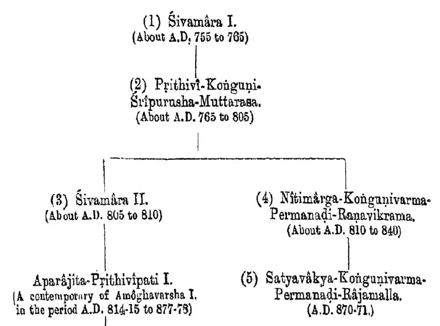
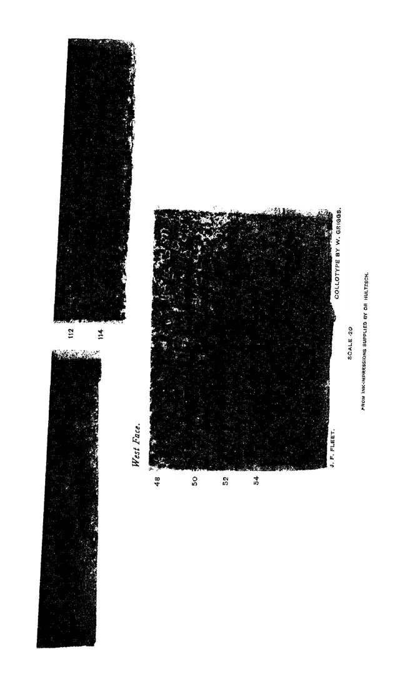

Śravapa-Belgoḷa epitaph of Mārasinha II
No. 18.— SRAVANA-BELGOLA EPITAPH OF MARASIMHA II.
By J. F. FLABET, Ph.D., C.I.E.
This inscription, engraved on the four faces of the base of a pillar, which is known as the Kūge-Brahmadēva-kamibha, at the entrance to the area occupied by the temples on the Ohandragiri hill at Śravaṇa-Belgola, was first brought to notice and edited by Mr. Rice, in his Inscriptions at Śravaṇa-Belgola, No. 38 (see also, id. Introd. p. 18 ff.). I edit my version of it from ink-impressions supplied to me by Dr. Hultzsch.
The writing consists of one hundred and fourteen lines: twenty-seven on the south face of the pillar, covering an area about 1' 11" broad by 2' 8" high; twenty-eight on the west face, covering an area about 1' 9" broad by 2' 10" high; twenty-eight on the north face, covering an area about 1' 10" broad by 2' 10" high; and thirty-one on the east face, covering an area about 1' 10" broad by 3' 1" high. Lines 28 to 49 on the west face, and the whole of the writing on the north face, are very much damaged; so much so that no connected passage, worth reproduction, can be made out. The rest of the record, however, is in a state of good preservation.— The characters are Kanarese, of the regular type of the period to which the record refers; and they were boldly formed and well executed throughout. They shew, of course, only the later or cursive forms of the bh (in Mānyakhēta, lines 12, 100) and b (s.g. bala, line 12, aṭuṅbam, line 84).9 They do not appear to include the separate distinct form of the lingual ṭ. They shew the virdma, represented by its own proper sign, in bhuṅjan and baṭit, line 2, koṭ, line 112, and ir, line 113; and they do not include any final forms. In lines 1 to 109, the average size of the letters is about " or ". In lines 110 to 114, the characters are somewhat smaller and thinner, though of the same type, and possibly written out by the same hand, with the rest of the record: this may be due to the person who wrote out the record, for the engraver, having not enough space to finish it in completely uniform characters; or the
1 Read सौवर्षं2.
2 The anuvāra stands at the beginning of the next line.
3 This verse is identical with verse 23 of the Chēbrōlu inscription.
4 Lines 17 to 25 contain a description of the boundaries of Gōvāḍa in the Teluga language.
5 No. 10 of the Table, above, Vol. IV. p. 85.
6 No. 12 of the same Table.
7 In the Rēpalle tāluka, about 7 miles north-east of Tsanda vōlu.
8 For the importance of the use of the earlier and later forms of bh and b, in connection with undated records about a century or a century and a half earlier, see page 155 below, note 8.
passage may be, as suggested by Mr. Rice, a slightly later addition.—The language is Sanskrit in lines 1 to 83, and Kanarese, of the archaic or stilted type, in lines 84 to the end. There a verses in lines 1 to 4, 28 to 99, and 112 to 114; and I am indebted to Mr. H. Krishna Sas for several very useful suggestions in dealing with both the text and the translation of so difficult passages in the Kanarese verses. The Sanskrit gadya or ornate prose, in line 5 to 27, is not very successful, there not being enough of the usual alliteration and rhymi endings; and there is nothing remarkable in such of the Sanskrit verses as remain in lines 50-55: in the Kanarese portion, however, the author, who was evidently an accomplished writer that language, has done full justice to his topic and to himself, both in sonorous diction and sense.—The orthography does not present anything calling for special notice.
The inscription is a panegyric of the Western Ganga prince Mārasimha II. It ment him by his proper name in line 42, and throughout the rest of the record by various birudas epithets, of which the most frequent and evidently the most highly prized one is Noļambal Āntaka, “the Death of the family of the Noļambas,”—with reference to his successes aga the Pallavas of the Noļambavāđi thirty-two-thousand province. Lines 110 to 114, at any: were written after his death; and they tell us that, a year after his completion of the care conquest which is the subject of the earlier part of the record, he abdicated, and died in practice of religion, at the feet of a Jain teacher named Ajitasēna, at Bānkāpur in Dhārwār district,—starving himself to death, like so many others whose epitaphs as Śravaṇa-Belgoļa, by a three-days fast.1 And it seems plain, in fact, that, like various other the records at Śravaṇa-Belgoļa, the whole of this inscription is an epitaph,—not a contemporous record engraved while he was still alive. The record is not dated; but it may be in A.D. 975, as an inscription at Mēlāgāni shews that Mārasimha II. either died or abdi in or shortly before June-July, A.D. 974.2 The contents of it are noticed in detail on 169 ff. below.
* * * * *
I have given, elsewhere,3 a full exposed of the spurious nature of certain copper-plate g which purport to present an unbroken genealogical list of the Western Gangas going by the second century A.D. And I have shewn how utterly unreliable, for purposes of a history, are those grants and a Tamil chronicle, called Kongudēta-Rējātkkal, which purport furnish information of the same kind. The results of the inquiry on that occasion were the earliest authentic Western Ganga names are those of Śrīpurusha-Muttarasa, who, for more precise discoveries, was to be placed somewhere in the period A.D. 750 to 850, Śivamāra, who was to be placed either immediately before or immediately after Śrīpu Muttarasa; and that the alleged genealogy was invented in the ninth or tenth century when all the great families of Southern India were beginning to look up their an belongings and devise more or less fabulous pedigrees. Since the time when I wrote, so records on stone have been brought to notice, and a critical version has been published the copper-plate grant which was already known but was not satisfactorily available for use these new materials, militating in no way with the conclusions at which I arrived, ena now to put together a genealogical and successional list of the Western Gangas of T (see page 153);4 and to make a first serious attempt to determine the real history and logy of the family.
1 For a description of the sallēkhand or vow of starving to death, see Mr. Rice's Insors. at Śrav.-B. p. 15 ff. He has pointed out (ibid. p. 17) that, among the various instances of it mentioned in the record there is one of even so late a date as A.D. 1809 (No. 72). The process sometimes lasted for three month But it was accomplished in three days in also the case of Mallishāna (above, Vol. III. p. 207, verse 72).
2 See page 168 below, and note 6.
3 Above, Vol. III. pp. 159 to 175.
4 The numbers before some of the names indicate the members of the family who actually ruled; or ruled, over the Gangavāđi province, and the order in which the succession went. When the exact re between two consecutive individuals is not established, dots are used instead of lines.
Mârasimha I.
.
.
(6) Satyavâkya-Koňgunivarma-
Permanađi-Bûtuga I.
(A.D. 870-71 and 891-92,)
.
.
(7) Nîtimârga-Koňgunivarma-
Permanađi-Exeyappa.
(A.D. 893-94 and 909-10)
.
(8) Râchamalla I.
.
.
(9) Satyavâkya-Koňgunivarma-
Permanađi-Bûtuga II.
(A.D. 940 and 949-50)
.
Maruladėva;
married Bijabbe.
Hastimalla-Přithivîpati II.
(A contemporary of Parântaka I.
in the period A.D. 900 to 940)
(10) Rachcha-Ganga.
By Rêvaka.
(11) Satyavákya-Kongupivarma
Permanađi-Márasiinha II.
(A.D. 968-64 to 974)
The Western Gaṅgas of Taĵakāđ.
(12) Satyavákya-Kongupivarma
Pañchaladėva.
(A.D. 975)

(13) Satyavákya-Kongupivarma
Permanađi-Ráchamalla II.
(A.D. 978 and 984)
The earliest authentic Western Ganga name is that of Śivamāra I. His existence proved by an inscription at Vallimalai in the North Arcot district,1 about eighty miles the east from the Ganga town of Kōlār, which enumerates four generations,—Śivamāra I.; son, Śripurusha;2 Śripurusha's son, Raṇavikrama; and Raṇavikrama's son, Rājamalli and says that Rājamalla, having seen the hill on which the record is, took possession of and founded a Jain temple there in tokon of having done so. The record, indeed, does tell us that these persons were Gangas. But their names fit in so exactly with the statement in the spurious grants and in certain unquestionable records in the Western Ganga terri itself which will be mentioned further on, that no hesitation need be feltabout identifying t as Western Gangas of Tałakād.
There are records in Mysore, which may be ascribed to Śivamāra I. One is a stone inscription at Dēbūr,3 which mentions him as simply Śivamāra, without any regal title of kind, but uses a technical expression which stamps him as holding a rank and authority considerably greater than those of any mere local governor.4 And others are stone inscriptions at Rāmpura and Mūdaha||i,5 which mention “the Koṅgrāni king (arasa) Śivamāra,”
1 Above, Vol. IV. p. 140, A.—In the Postal Directory of the Madras Circle, the name of the place is as 'Vallimalai.'
2 The spurious grants describe Śripurusha (whose proper name, Muttarasa, they do not give) sometimes so, and sometimes as the grandson (without mentioning the date of his name), of Śivamāra I.; to Śripurusha the two sons, Śivamāra I. and Vijayāditya; and they represent Rajamalla as the son of Vijayāditya (see the above, Vol. III. pp. 161, 177): and curiously enough, it is the protected earlier records, from Mysore, Nāgama and Manpe (for the last, see page 160 below, note 7), which wrongly represent Śivamāra I. as the grand of Śripurusha; while the Sūđi grant, purporting to be written nearly a century and a half after the Manpe correctly snaaks of the two persons as father and son.—This short but valuable record from Vallimalai d finally of one step in the fictitious podigree, niz. the step which some of the spurious grants place between Śi I. and Muttarasa (see, also, page 116 below, note 5).
3 Mr. Rice's Epigraphis Carmelia, Vol. III., Nj. 26.—Mr. Rice has preferred to allot this record second Śivamāra.—This record mentions a person named Ereya. With this person Mr. Rice identifies Mahārdja Examma of an inscription at Madūr (ibid. Ml. 68), and the Erea or Elea of an inscription at Mū (ibid. Nj. 122), and the Erelm-Vommedi of a spurious record at Gatṭavāđi (ibid. Nj. 129, with a lithograph) purports to be dated Suka-Sarivat 111. He thus refers the Madūr and Mūdaha||i records, as well as: Dēbūr, to the time of Śivamāra II. And he alters the date of the Gatṭavāđi inscription from Ś.-S. 111 t 711, so as to bring the record on to A.D. 760-90,—sufficiently near to the period of Śivamāra II. The G inscription, however, has the later cursive form of the ē, in scl.obyegara, line 10, and bāljin, line 11: the earliest not be placed before A.D. 804 (see page 165 below, note 8); and the general style of the characters sug period at least a century later than even that time.
4 The expression in question is prithict-rdijyam-geya, or keya, “to reign over the church.” It is proper; nical expression of paramount sovereignty (see the second edition of my Dynasties of the Kanarese District Gazetteer of the Bombay Presidency, Vol. I. Part II. p. 423, note 4); but the exact way in which it applied, has always to be determined by the context and general surroundings. The Western Gangas of were not paramount sovereigns, except occasionally. They belonged to the class of great feudatory nob were more or less independent in their own heroditary territories, and whose position is always very recognizable, if the records are studied attentively, from the various technical titles and expressions that carefully used or abstained from. The Śilāhāras of Kānd, and the great feudatory nebles of some other used the expression sukha-saṅkathā-vinādaāim rdijyam-geya, cr. in Sanakryh, sukha-saṅkathā-vinādśna kṛi. The expression properly used by the Westeen Gangas, in their own province, was prithict-rdijyam-geya will be found in almost all of their records which exist in their own licenditary territory: to the contrary I ci at present, only rdijyam uttar-bātaram saluttam-ira (another expression of, strictly, paramount sovereignt, Kūlagere inscription of the time of Ereyappa, and the use of the purely subordinate expression dīa, “to go the cases of Ereyappa in the Bōgūr inscription, and of Būrga II. in the Ābakūr inscription. On the other I proper expression to denote their position and authority outside their own province of Gangavāđi, was dīu find this duly used in the case of Mārasirha II. in the inscriptions at Adaraguñchi, Gundūr, and Hebbāi,: in the case of Pañchaladēva in the inscription at Mūlgund.
5 Ep. Cars. Vol. III., Nj. 50, 127. The Rāmpura inscription, again, has been assigned by Mi Śivamāra II. But the use of the title arasa is a strong indication that the records are to be ascribed to Śivamāra. Muttarasa became eventually a Mahārāiddhirāja and Kāranacāra; in the amplified form.
use the same technical expression of high position. These three records are not dated in any era. And there is nothing in the contents of them to enable us to establish any synchronism; and so to assign an exact date to them. But the characters of the Dēbūr inscription are atributable to any time within about fifty years on either side of A.D. 800.1 The period of the record will be determined more closely further on.2
The authentic existence of the second of the four persons mentioned in the Vaĵimami inscription, viz. Śripurusha, had already been established3 by some undeniably gennaine stone records at Talakād,4 Sivāra,5 and Sivarpatṇa,6 in Mysore. The Tajakād inscription, which is dated in his first year7 and the inscription at Sivāra, give him the fall style of “the Mahārāja Pīthuvi-Koṅguṇi-Muttarasa-Śripurusha;” while, of the Sivarpatṇa inscriptions, one styles him “the Mahārāja Śripurusha,” and the other, which is dated in his twentieth-old year,—perhaps the twenty-ninth,7—calls him “the Koṅguṇi Mahārāja Śripurusha:” evidently, Muttarasa was his name, and Śripurusha, “husband of Fortune,” was a biruda. Like the records of Śivamāra I., these records of Muttarasa,—and also those which will be mentioned further on,—are not dated in any era; and they do not contain anything by means of which synchronisms can at present be established. But they are, similarly, to be referred, on pateographic grounds, to the period A.D. 750 to 850, or thereabouts. And one particularly instructive character,—the old square form of the letter b,8—
Mahtevjādhiveĵa (regreding which, see page 163 below, note 2), the use of the first of these two titles was continued by all his descendants from Hanavikrama onwards; and it does not seem likely that his son Śivamāra II. would revert to the simple designation arasa.—Another inscription at Mūdahalī (Nj. 126) is probably also of the time of Sivamāra I.; but the name of the prince is illegible.
1 I write on the authority of an ink-impression, which Mr. Rice kindly sent for my inspection. I have not had the means of examining the Rāpaura and Mūdahalī records in the same way.
2 The eparious italjegere grant (Ep. Carn. Vol. III., Md. 113, with a lithograph) cites a date in the month Jyēsigha (May-June), Saka-Samvat 635 expired, falling in A.D. 718, as being in the thirty-fourth year of Sivamāra I., and so would place the commencement of his rule in A.D. 679-80. This latter date is altogether too early. And it is not likely that the record has even hit off a true date for him in A.D. 718.—The Nāgamaṅgala grant would place the commencement of the rule of his successor Śripurusha-(Muttarasa) in A.D. 727-28 (see page 166 below, note 2); and this, with the Haljegere grant, would give Sivamāra I. a rule of forty-eight years, innately before a rule of seventy-eight years by his son!
3 See above, Vol. III. p. 173 f.
4 Ep. Carn. Vol. III., TN. 1; with a lithograph.
5 Here I write on the authority of photographs which Mr. Rice kindly sent me,—one from Sivāra, and two from Sivarpatṇa.
6 Prathama-nijaya-samhatsaram Kārttige punname-andu; lines 3, 4.
7 The words 'vijaya-sa[ni]vatsara[ni]', followed by the aksharas irppa, are quite clear, in line 2. I conjecture that what follows them stands for ttombattaneyoĵu. But the passage (and, in fact, the whole of the remainder of this record) has been so spoilt in painting the stone for photography, that it is a matter of conjecture only. Since writing this note, I have found an indication that Mr. Rice would take the record to be dated in the twenty-eighth year (Ind. Ant. Vol. XIII. p. 188). The aksharas thenĵaneyoĵu, however, seem insufficient for the space and for the marks shown in the photograph.—This practice of painting inscriptions by hand for photography cannot be too strongly condemned: it presents the records as they appear to the eye of the person who paints them, and not as they really are; it introduces mistakes, or at least doubt, in even the clearest passages,—for instance, the lithograph of the Tajakād inscription of Muttarasa shews in the word tombattarau, line 9, an anusvāra in the second syllable which one cannot believe to be in the original, and the word Kadabūr or Kadabūr in one of the Sivarpatṇa inscriptions, contrasted with what reads at first sight as Kadambūr or Kadambūr in the other record at the same place (see page 161 below, note 1), is another case in point; it often results, as in the date of this Sivarpatṇa inscription, and in fact throughout the record, in the creation of arbitrary and fantastic signs which render whole passages quite unintelligible; and, in short, it prevents altogether the purely mechanical reproduction which is absolutely necessary for the satisfactory and critical study of the records.
8 It occurs in the Tajakād inscription (see the lithograph) in the words sambatsarañ (line 4) and tombattaru (line 2).—For the importance of the old or square and later or cursive forms of kh and b, as a help in fixing the dates of records of the period with which we are dealing, see above, Vol. III. pp. 162, 163. Records containing the cursive forms of these two letters, cannot be placed before A.D. 804. The square forms continued in use up to A.D. 886. But the cursive forms,—the introduction of which, into epigraphic records, seems to be connected with the encouragement that was given to the Jains and their literature in the time of the Rāshtrakṭa king
proves that at any rate they cannot have been engraved much, if at all, after A.D. 850; while the general palaeographic standard of the Tałakāđ inscription points distinctly to a time somewhat earlier than A.D. 800, as the date of the preparation of that record. It is, thus, not impossible that the person or persons who fabricated the spurious Hosūr and Nāgamangala grants, had available, or hit off, true dates for him, in A.D. 762 and 776-77, or at any rate in the latter year.1 But it is not possible that, in A.D. 776-77, he had already been ruling for fifty years, as is claimed by the Nāgamangala grant;2 for, the synchronisms which are established for some of his descendants, in both lines, shew plainly that the long life and rule, which he undoubtedly enjoyed, were made out by continuing into the ninth century A.D. The approximate limits for him will be indicated below.
There are other records of Śripurusha-Muttarasa in Mysore, at 'Dēvalāpura, Varupa, Pūrigāli, Hemmige, Bannūr, and Hołalavāđi.3 The first four of them belong to the earlier part of his career: for, the Pūrigāli record styles him "the Mahārája Śripurusha," as also, apparently, does the Dēvalāpura stone; the Varupa record calls him "the Koṅgaṇi Mahārája Śripurusha;" the Hemmige record describes him as "Prithivī-Koṅgaṇi-Muttarasa," without any title; and the Bannūr record probably styles him "Prithu[vi-Koṅguni-Muttarasa-Śrī]purusha," again without any title. All of the records which contain such a reference at all, use the same technical expression of high position and authority which is used in the case of Śivamāra I. And the Hołalavāđi inscription marks an epoch in his career, by also giving him the paramount titles; it styles him "the Koṅguni Mahārájádluīrája and Paramétvara Śripurusha."
As far, therefore, as individual names go, the authentic history of the Western Gaṅga of Tałakāđ starts with these two persons, Śivamāra I. and his son Śripurusha Muttarasa.5 Records giving names for earlier times may, of course, be obtained hereafter; for
Amōrhavarsha I. (A.D. 814-15 to 877-78),— were then in use, and are found in a record of A.D. 865. And record of much about the same date shews both the forms of b, mixed (loc. cit. p. 163, note 1).—The old or squirr form of the b occurs in also one of the Sivarpatṇa records of Muttarasa, in the word Kadabīr, line 5; and doubt less also in the same word in line 3 of the other Sivarpatṇa record, where, however, the true appearance of the original has been much spoilt by painting the stone for photograph. I do not find a b of either form in the Sivā record. And none of the four records appears to include a kh.— Mv attention has been drawn to the fact that cursive kh appears, in the lithograph, at the end of line 12 of the Harihar grant of Vinnyāditya of A.D. 6 (Ind. Aut. Vol. VII. p. 300). An inspection, however, of the photograph, which is given with the lithograph P. S. and O.-C. Inscre. No. 17, will shew that this is only due to an injudicious tonching up by hand of damaged 'square kh; this was done at a time when it was thought more important to publish clear and easily legi lithographs, than to produce absolutely mechanical and faithful facsimiles which an unpractised eye might find difficult to deal with.
4 Prithivt-rájyam-geyu, or keyu; see page 154 above, note 4.
1 Just as a possibly true year may have been available, or was hit off, for Būtuga II., in the spurious 5 grant (see page 167 below, note 2) which refers itself to his time. But calculations shew that the details of the de cited in the Hosūr and Sūđi grants are not correct for the years that are quoted; and this detracts a good deal of any value that might be attributable to them.
2 This would place the commencement of his rule in A.D. 727-28. And, as the spurious Suradhōnup grant (see page 160 below, note 7), which cites the Sarvajit saṅvatsara, Śaka-Saṅvat 729 (expired), = 807-808, as the third year of Śivamāra II., would thus place the commencement of the rule of Śivamāra II. A.D. 805-806, this would give Muttarasa a total rule of seventy-eight years.
3 Ep. Carn. Vol. III. Mv. 25, 55; Ml. 87; TV. 53, 113; Nj. 23.— He is apparently also mentioning as Śripurushayya in an inscription at Belavatte (ibid. My. 6), and as Muttarasa in another inscription Bannūr (ibid. TN. 115), from which Mr. Rice has inferred (ibid. Introd. page 3) that Bannūr was birth-place. This Bannūr inscription mentions also the name of Ereyappa, and therefore seems to be, in Muttarasa's own time, but about a century later.
5 Mr. Rice (Ep. Carn. Vol. III. Introd. pp. 3, 7) has placed between them a Mārasiṅha I., who identifies with the alleged and unnamed son of the first Śivamāra and father of Śripurusha-(Muttarasa) is mentioned in some of the spurious grants (see page 154 above, note 2); quoting "the Salem grants" a authority for doing so. But there is no foundation in fact, of any kind, for this. The alleged gener between Śivamāra I. and Śripurusha-Muttarasa has now been disposed of by the Vallimalai record (page 154 ab
that the Western Gaṅgas were a people of importance and power at least a couple of centuries before the time of Śivamāra I., is shewn by the fact that the Kadamba king Mrīgēśavarman claims to have defeated them.1 But it is not at all probable that they will give a connected genealogy: the plainly imaginary nature of some of the names which the spurious grants place before that of Śivamāra I., is a strong indication that materials for compiling a genuine earlier pedigree were not available even then; and the most that we may expect, is, a few detached notices.2 All that we know as yet about the Gaṅgas during the centuries immediately following the time when Mrīgēśavarman was in conflict with them, is, that they were conquered by the Western Chalukya king Kīrtivarman I. in the period A.D. 567-68 to 597-98,3 and again by his son Pulikēśin II. about A.D. 608,4 and that the Harihar grant of Pulikēśin's grandson Viuayāditya dated in A.D. 694, speaks of them as hereditary servants of the Western Chalukya kings.5 And it is plain that they first came prominently to the front on the downfall of the Western Chalukya dynasty. Even then, they did not immediately assert the independence which, undoubtedly, they subsequently enjoyed for a while. That they felt their way gradually to the latter step, is shewn by the facts that Śivamāra I., while adopting a technical expression indicative of considerable power, used simply the title of arasa, "king," and that Muttarasa, though making an advance on this, did not at first assume any higher designation than that of Mahārāja, and developed into a Mahārījādhirāja and Paramēśvara, as which he figures in the Holalavāđi record, only at some later time. Now, the last Western Chalukya king. Kīrtivarman II., lost the northern and central portions of his dominions to the Rāshtrakūṭas, under Dantidurga, before A.D. 754. He was still in possession of the southern territory up to A.D. 757. But shortly after that time he was completely overthrown by Dantidurga's successor, Krīshṇa I.,— say, about A.D. 760. And the same period saw the extinction of another great dynasty of Southern India,— that of the original Pallavas of Conjeeveram, who also, through the possessions that they held in the Nolambavāđi province, must have had much to do, though not so directly as the Western Chalukyas, with the Gaṅgas of Talakāđ. The last great Pallava king known to us,— and, unquestionably, the last representative of his line,— was Pallavamalla-Nandivarman, Nandipōtavarman, or Nandipōtarāja, son of Hiranyavarman.6 He was a contemporary of the Western Chalukya king Vikramāditya II., at some time in the period A.D. 733-34 to 746-47. And we have records dated in his twenty-first, twenty-second, and fiftieth years.7 Now, he succeeded to the Pallava throne after a distant kinsman, Paramēśvaravarman II.;8 the latter was preceded by his father, Narasimhavarman II.; and Narasimhavarman was preceded by his father, Paramēśvaravarman I., who was contemporaneous at some time in the period A.D. 655 to 680 with Vikramāditya I.,
And the person whom Mr. Rice thus misplaces,— through a mistake which is to be attributed to the imperfect original rendering of the Udayēndiram grant of Hastimalla-Prīthivīpati II. in Mr. Foulkes' Manual of the Salem District, Vol. II. p. 369 ff.,— is Mārasimha I., grandson of the second Śivamām (see page 162 below).
1 Ind. Ant. Vol. VI. p. 25; for "the family of Tungagaṅga," read "the lofty family of the Gaṅgas."
2 This much, at any rate, is certain,— as I have already said (above, Vol. III. p. 175),— that nothing will ever be obtained to authenticate such dates as those of A.D. 248 and 466 which two of the spurious grants purport to give for Harivarman and Ayinta-Koṅguṇi, unless it upsets in some way or other the genealogy that is asserted by the grants; and, on the other hand, if the genealogy asserted by the grants (or anything like a real basis from which it can have been concocted) is ever authenticated, then the dates will be upset, in favour of much later ones. The genealogy and the dates cannot possibly stand together.— It is not likely, however, that there is any real basis of ancient fact for either the asserted genealogy or these two dates; see the Postscript, page 174 below.
3 Ind. Ant. Vol. XIX. p. 19. 4 Id. Vol. VIII. p. 244. 5 Id. Vol. VII. p. 303.
6 See Dr. Hultzsch's South-Ind. Inscrs. Vol. II. p. 342 ff.
7 They are, respectively, the Udayēndiram grant (South-Ind. Inscrs. Vol. II. p. 361); the Krākūđi grant (ibid. p. 342); and an inscription at the Pañchapāṇdavamalai hill (above, Vol. IV. p. 186, A). In respect of the last of them, we must understand that it is dated in the fiftieth year in which he was still reigning; not in simply the fiftieth year from the commencement of his reign, cited at a time when he himself was dead,— a rendering, suggested as possible by the editor of the record, for which there is no substantial authority.
3 And there was, perhaps, also a short intermediate reign, of Mahēndravarman III.
the great-grandfather of Vikramāditya II. In such circumstances, it is not at all probable that Pallavamalla-Nandivarman can have completed the fiftieth year of his reign between A.D. 733 and 747. It is much more likely that his reign did not even commence till A.D. 715 or later. And fifty years from that point would bring him on to just the time to which we may refer Śivamāra I. and Muttarasa. The spurious Manne grant, indeed,1 would carry him on to even later times: it says, speaking of Śivamāra II., that “his forehead was adorned by a fillet (of royalty) placed there with their own hands, when they performed (his) anointment to the sovereignty, by the two ornaments of the Rāshtrakūta and Pallava lineages named Gōvindarāja and Nandivarman, who were (already) anointed on (their own) foreheads.”2 Gōvindarāja seems to be the Rāshtrakūta king Gōvinda III., whose reign began about A.D. 783-84 and ended in A.D. 814-15: Śivamāra II. was undoubtedly contemporaneous with him towards the end of his reign; and we shall find reasons, further on, for believing that he did assist or recognise the succession of Śivamāra II. to the leadership of the Gaṅgas. Nandivarman must be Pallavamalla-Nandivarman, son of Hiranyavarman.3 He cannot have had anything to do with Śivamāra II. at so late a time as the date of his succession on the death of Muttarasa. And it seems that, mixed up with a real act of Gōvinda III. towards the second Śivamāra, the Manne grant has preserved an anachronistic reminiscence of a real act o Pallavamalla-Nandivarman towards the first Śivamāra; viz. that, on the downfall of the Western Chalukyas, he formally recognised Śivamāra I. and crowned him as the chief, more or less feudatory, of a powerful tribe on the borders of his own outlying province of Noļambavād. The date of A.D. 760, mentioned above as the closely approximate time of the complete extinctio of the Western Chalukya power, is within the period to which Śivamāra I. is to be referred, and within the time to which the reign of Pallavamalla-Nandivarman may be carried on. And we shall probably be very near the truth, if we take A.D. 755 as the initial date of the successio of Śivamāra I. to the leadership of the Western Gaṅgas, and A.D. 760 as the time when he was recognised by Pallavamalla-Nandivarman. We may then place the accession (Muttarasa) about five years later, in A.D. 765; and, as there are indications, as already mentioned, that he had a long rule, and as we have a record which is actually dated perhaps his twenty-ninth year, we may assume that he ruled for about forty years, to A.D. 805. As the record which seems to be dated in his twenty-ninth year still giv him, like the earlier ones, the title of Mahārāja, it would appear that it was in the last ten years of his time that he threw off all semblage of vassalage and assumed the paramon titles; till then, he must have been more or less feudatory, at first to Pallavamal Nandivarman, and then to a kinsman of his own, Vijaya-Narasiñhavarman, who, as shall see just below, succeeded to the Pallava throne after Pallavamalla-Nandivarman.4
1 For this record, see page 160 below, note 7.
2 The original, which I am able to quote from photographs which Mr. Rice kindly sent me, runs—(plate in line 10 ft.)—E[d*]ehtraku(ku)ta-Pallav-ānvaya-tilakdbhydām mārddh-dhbarikta-Gōvindarāja-Nandivar-dhbaridbhydām samanushṭi(ehthi)ta-rājy-dhbarshkdbhydām nni(n)jā-kara-ghaṭita-pattā-vibhāshita-laldāp
* * * * * īr4.Śivamāradāva[*].—I have taken laldāpaṭta, 'the flat surface of the forehead simply an alliterative expansion of laldā. Otherwise, we might divide the compound, laldā-patṭĝ, and tram 'the (hereditary Gaṅga) fillet (of royalty) on his forehead was adorned by (other) fillets placed there their own hands,' etc.; this, however, does not seem so satisfactory a rendering.
3 It might, perhaps, be said that he is the later Nandivarman, also called Vijaya-Nandi-Vikramavar son of Dantivarman (see page 159 below). But this does not seem at all probable. And, if it were so, an anachro in the other direction would be involved; for, Nandivarman, the son of Dantivarman, cannot be placed as ear A.D. 797, which is the pretended date of the Manne grant; he cannot be placed before A.D. 804, and is the date that we have for Dantivarman.
4 The Humcha inscription of A.D. 1077-78—(see Mr. Rice's Annual Report for the year ending 81st M 1891; this record contains a great deal of mythical matter, relating to the Śāntara family as well as the Western Gaṅgas, and is, of course, of no more value than the spurious copper-plate grants in respect of early history which it pretends to give)—asserts that Śrīpurusha-(Muttarasa) was the first of the W(
We shall revert presently to the descendants of Śrīpurusha-Muttarasa. Meanwhile, we may conveniently notice here another branch of the Western Gaṅga family, which succeeded to the Pallava dominions.
Two vīrgals or monumental tablets at Āmbūr in the North Arcot district,1—which commemorate the death in battle of two heroes, followers of a certain Pirudi-Gaṅga c.tyger, on an occasion when the army of the Nuļamba, i.e. the Pallava prince of Nuļambi and i.i. attacked the village for a cattle-raid,—cite the twenty-sixth year of a king named Vijaya-Nripatunga-Vikramavarman. There are other inscriptions of the same king in the Tanj pe and Trichinopoly districts.2 And on palæographic grounds, as well as for reasons connected with the history of that part of the country, it is necessary, Dr. Hultzsch tells us, to place the reign of this Vijaya-Nripatunga-Vikramavarman before that of the Chōla king Parītutaka I. (about A.D. 900 to 940). There are also two copper-plate grants of the same king,3 one of which, obtained at Bāhtūr near Pondicherry, and dated in his eighth year, names his immediate ancestors and gives the pedigree that he claimed. That pedigree is, first, the Purāpic genealogy of the Pallavas, from the god Brahman to the eponymous Pallava, the alleged founder of the family. From his family, the grant says, there were born Vimain. “Koñkanika,” and “other kings.” When they had passed away, a certain Dantivarman became king. His son was Nandivarman, whose wife was Śaṅkhâ, of the Rāshṭrakūṭa family. And their son was Nripatungadēva, or Vijaya-Nripatungavarman as he is called in the Tamiļ portion of the grant,—i.e. the Vijaya-Nripatunga-Vikramavarman of the stone records at Āmbūr and elsewhere. Now, the seal of the other grant of Vijaya-Nripatunga-Vikramavarman bears the bull-crest of the Pallavas,—in due accordance with the descent that is put forward for him. But we may safely adopt Dr. Hultzsch's suggestions, that the name of “Koñkanika” is a reminiscence of the “Koñkañi” who is represented as the original ancestor of the Western Gaṅgas in the Udayēndiram grant of Hastimalla-Prīthivipati II,4 and who is, of course, the mythical Koṅgunivarman whom the spurious grants from Mysore claim as the founder of the Western Gaṅga family; and that consequently, in spite of the Pallava pedigree, a connection with the Western Gaṅgas was claimed by Vijaya-Nripatunga-Vikramavarman. And we may also safely follow Dr. Hultzsch in his identification of Dantivarman with the Dantiga, king of Kāñchi, whom the Rāshṭrakūṭa king Gōvinda III. subdued and levied tribute from in A.D. 804,5 and in his inference that the Rāshṭrakūṭa princess Śaṅkhâ, wife of Nandivarman, was a daughter of Gōvinda's son and successor Nripatunga-Amōghavarsha I. (A.D. 814-15 to 877-78), after whom her son must have been partly named.
There are also, we are told by Dr. Hultzsch,6 various stone records, not yet published, which may be attributed with some probability to Dantivarman and Nandivarman: there is a record of Dantivarman in the Vaikuntha-Perumāļ temple at Conjeeveram;7 and there are inscriptions at the Viriñchipuram temple in the North Arcot district, and at Śaduppēri, near Vēlūr in the same district,8 dated in the ninth, forty-seventh, and fifty-second years of a Vijaya-Nandi-Vikramavarman who may be identified with Nandivarman, son of
Gaṅgas to assume the designation of Pormanađi, and that he took it from a Pallava king of Kāñchi, on defeating him. We have already seen that it was Muttarasa who first assumed the paramount titles. And so, though his records have not yet disclosed the use of the designation Permanađi by him, the Humcha record very possibly preserves, in the above assertion, a real historical item, mixed up in the usual mythical matter in which it follows more or less the spurious grants. The said king of Kāñchi, defeated by him, would be his kinsman Vijaya-Narasirhavarman,—defeated when he threw off the yoke of vassalage.
1 Above, Vol. IV. p. 180.
2 Ibid. p. 181.
3 Ibid. p. 180.
4 For this record, see page 162 below.
5 Ind. Ant. Vol. XI. p. 127.
6 Above, Vol. IV. p. 181.
7 See South-Ind. Inscrs. Vol. II. p. 344, note 3. It styles him Mahārdīja.
8 Id. Vol. I. p. 133, Nos. 124, 125; p. 180, No. 108.
Dantivarman. And at Ukkal in the North Arcot district there are inscriptions1 giving the name of a Kampavarman, or more fully Vijaya-Kampa-Vikramavarman, who may have belonged to the same family with Vijaya-Nripatunga-Vikramavarman and his ancestors.
But, of more importance for present purposes, is the fact that, at Kīl-Mutṭugūr in the North Arcot district, there is an inscription,2 dated in the eighteenth year of a king Vijaya-Narasimhavarman, which shows, in the sculptures below it, the Western Gaṅga emblems of the elephant and the goose or swan,—the emblems being connected with Vijaya-Narasimhavarman himself by the fact that he was, evidently, the maker of the grant that is registered in the record. The name of this person is, characteristically, a Pallava name: but the emblems mark him as a Western Gaṅga; and he has been appropriately described by Dr. Hultzsch as “a Pallava by name, but Western Gaṅga by descent.” Now, the alphabet of this record at Kīl-Mutṭugūr is more archaic than that of the Âmbūr inscriptions; and Vijaya-Narasimhavarman must, therefore, be placed at any rate before Vijaya-Nripatunga-Vikramavarman. That he was connected with Vijaya-Nripatunga-Vikramavarman, and also with Vijaya-Kampa-Vikramavarman, is plainly indicated by the use of the prefix kó, “king,” in all three cases, and of the word vijaya, in the Tamiñ form visaiya, as part of the proper names: and it appears that one of the grants of Vijaya-Nripatunga-Vikramavarman actually places a Narasimha in the genealogy, before Dantivarman.3 Whether Kampavarman came before Narasimhavarman, or after bim, is not yet known. But the retention of the Western Gaṅga emblems by Narasimhavarman refers him to a period when the members of this branch of the Gaṅga family had not fully turned themselves into Pallavas. And it seems probable that he was the one who secured the succession to the Pallava dominions. If so, as he must have done it on the death of Pallavamalla-Nandivarman, son of Hiranyavarman, we may place his initial date somewhere about A.D. 760 to 770.4 He was eventually followed by Dantivarman, Nandivarman or Vijaya-Nandi-Vikramavarman, and Vijaya-Nripatunga-Vikramavarman. And one or other of them, or perhaps Vijaya-Kampa-Vikramavarman, discarded the emblems of the Western Gaṅgas and adopted those of the Pallavas,—thus converting himself into a Pallava, just as the Eastern Chalukyas became Chółas in the time of Kulôttunga-Chóładėva I.5 The exact connection of Vijaya-Narasimhavarman with Śivamāra I. remains to be discovered.
We revert now to the descendants of Śripurusha-Muttarasa. The spurious Sūdi grant gives the name of Śivamāra II., as his eldest son;6 and the spurious grants from Suradhēnupura and Maṇne purport to be records of this person himself.7 Now, one of the
1 See above Vol. IV. p. 182, note 4.—Two of these inscriptions are at Ukkal, in the Arcot tāluka; and one of them is dated in his tenth year, and the other in his fifteenth year: these two records mention him as Kampavarman. An inscription at Dūśi, near Māmaṇdūr in the same tāluka, gives his name in the fuller form of Vijaya-Kampa-Vikramavarman. I am able to quote these details through Dr. Hultzsch's kindness in sending me advanced proofs of some pages of his South-Ind. Inscre. Vol. III.
2 Ibid. p. 177; see also p. 182.
3 See Mr. Sewell's Liste of Antiquities, Madras, Vol. II. p. 30; this is the grant in the office of the Collector of North Arcot,—not the Bābūr granted quoted in the text above.
4 See page 158 above.
5 See Ind. Ant. Vol. XX. p. 277.
6 This grant (for which, see page 167 below, note 2) would give him the second name of Saigoṭṭa; so, also, the Humcha inscription of A.D. 1077-78 (see page 158 above, note 4). He is evidently the Saigoṭṭa-Śivamāra, an alleged feudatory of a king Amóghavarsha, for whom a record of about the eleventh century A.D., at Kalbhāvi in the Belgaum District (Ind. Ant. Vol. XVIII. p. 309), purports to furnish a date in A.D. 308, 314, or 339 (the details of the date are so incorrect that the exact year which is intended cannot be determined).
7 These two grants are mentioned by Mr. Rice in his Ep. Carm. Vol. III. Introd. p. 3. The Suradhēnupura grant is not yet available in detail. But I am able to quote the Maṇne grant from photographs which Mr. Rice was kind enough to send me.—It appears that the Suradhēnupura grant cites the Sarvajit sahvaatsara, Śaka-Samvat 729 (expired),—A.D. 807-808, as the third year of Śivamāra II., and thus would place the commencement of his rule in A.D. 805-806.—The Maṇne grant, however, taking the genealogy as far as
Sivarpatṇa inscriptions makes mention of a Śivamāra who was governing the village of Kadabūr or Kadabūr,1—which may be identified either with the modern 'Kadaburu' in the Gupḍlupēṭ tāluka of the Mysore district, or with Kadaba in the Gubbi tāluka of the Tumkūr district,—in the time of Śripurusha-Muttarasa, and in, perhaps, his twenty-ninth year.2 There is nothing in this record to establish any relationship between this Śivamāra and Muttarasa. But we may take it as tolerably certain that he was a son of Śripurusha-Muttarasa, as stated in the spurious grants, and that we have here another authentic name, that of Śivamāra II. We have already noticed the fact that the spurious Maṇne grant speaks of a filet of sovereignty being placed on his head by the Rāshṭrakūṭa king Gōvinda III. (from about A.D. 783-84 to A.D. 814-15). Spurious as the record is, there is nothing impossible in the truth of the statement; especially if it is taken in connection with certain statements in the records of Gōvinda III. himself, which tell us that he released from long captivity, and sent back to his own country, one of the Gaṅgas, who had been imprisoned by his father3 Dhruva.3 The Rāshṭrakūṭa records, indeed, do not disclose the name of the Gaṅga who was thus treated. But the clue to his identity is furnished by the spurious Maṇne grant, which asserts that Śivamāra II. made himself famous by being victorious against the armies of the Rāshṭrakūṭas, the Chālukyas,4 and the Haihayas (i.e. the Kalachuris), when they were encamped at a village named Mudukundūr, and that he defeated the countless cavalry of Dhruva which had overrun the whole earth.5 Śivamāra II. may very well have been entrusted with the command in some war between his father and Dhruva. And we may suppose that, during the campaign, he was eventually defeated, captured, and imprisoned by Dhruva, and that, on Muttarasa's death, he was liberated by Gōvinda III., in order to succeed to the leadership of the Gaṅgas, on which occasion the Rāshṭrakūṭa king would very likely crown him,—as the spurious Maṇne grant asserts,—with some feudatory crown. This event may be placed somewhere about A.D. 805. The same passages in the Rāshṭrakūṭa records tell us that, after no long time, Gōvinda III. found it necessary to re-conquer the Gaṅga, who through excess of pride stood in opposition to him, and to put him in fetters
Śivamāra II., son of Śripurusha, then tells us that Śivamāra's son was Mārasimha; it then proceeds to record a grant that was made to a Jain temple at Mānyapura with the permission of this Mārasimha, who, having attained the position of Yuvarāja, was administering the whole of the Ganga mandāla; and then, after specifying the boundaries of the grant, it gives the date, in the month Āshāḍa (June-July), Ś.S. 719 (expired), falling in A.D. 797. It would thus establish for Śivamāra II. a date, when he either was ruling or else had ruled and passed away, eight years before the commencement of his rule according to the Suradhēnupura grant.— A Mārasimha, son of Śivamāra II., is not mentioned in any other record that has as yet come to notice. And the person who is introduced in the Maṇne grant seems to be the Mārasimha I. of the Udayēndiram grant,—in reality the grandson of Śivamāra II.
1 In this record, the third akshara of this name appears at first sight to be a badly formed mbū; but this must be attributed to the original being spoilt in painting the stone for photography. A place which is undoubtedly the same, is mentioned in also the other Sivarpatṇa inscription; there, the third akshara is nothing but bū, and, unless we assume that the painting of the stone has produced the obliteration of an anusvāra over the second akshara, the name is distinctly either Kadabūr, with the dental d, or Kadabūr, with the lingual d.
2 See page 155 above, note 7. 3 Ind. Ant. Vol. VI. pp. 69, 70; Vol. XI. pp. 160, 161.
4 To avoid attributing to the Maṇne grant any more anachronisms than are inevitable, we may take this as referring to the Eastern Chalukyas. Narēndramṛigarāja-Vijayāditya II., of that dynasty, is described (see Ind. Ant. Vol. XX. p. 101) as waging war for twelve years, by day and by night, and fighting a hundred and eight battles, with the armies of the Gaṅgas and the Rāshṭrakūṭas: the passage, however, does not mention the name of any individual Gaṅga; and the period of Vijayāditya II., A.D. 799 to 843, covered a great deal more than the time of Śivamāra II.
5 The original runs—(plate iv. a., line 3 ff.)—Mudukundār-nudma-grām-ópavishta-Rāshṭraku(kū)ṭa-Chālukya-Haihaya-pramukha-prapti(vl)ra-sanātha-vallahha-sainya-vijaya-vikhyāpita-prabhāvaḥ [!*] Āpi chaḥ (read cha) | Dhōr-dīvtyam samantdāt=prabalam=upagata-vyāpta-dīk-chakravālam nirjity-ānāka-saṅkhyaṅ ata.—Dhōra is the Prākṛit form of the name of Dhruva; it is used in also the passages referred to in note 3 above.
again. This would probably be about five years later,—say in A.D. 810. And it was doubtless this second imprisonment of Šivamāra II. that let in his younger brother Raṇavikrama to the Western Gaṅga succession.1
A copper-plate grant from Udayēndiram in the North Arcot district2 carries this line of descent three generations further: it mentions, in the lineage of “Konkapi, the first of the whole Gaṅga race,”—in which lineage, it says, following the spurious grants, there had been born Vishṇugôpa, Hari (i.e. Harivarman), Mādhava, Durvinīta, Bhūvikrama, and “other kings,”—Šivamāra II.;3 his son Prīthivipati I., otherwise called Aparājita;4 Mārasimha I., “the light of the Gaṅga family,” son of Prīthivipati I.; and Mārasimha's son, Prīthivipati II., otherwise called Hastimalla, “a flamingo in the tank of the Gaṅga family.” In the way of historical information, it tells us that Prīthivipati I. saved Iriga and Nāgadanta, sons of king Dīṇdi,—one of them from Amôghavarsha, i.e. the Rāshṭrakūta king Amôghavarsha I. (A.D. 814-15 to 877-78), and the other from the jaws of death; that he fought a battle at a place named Vaimbalguli; and that he defeated the Pāṇdya prince Varaguṇa in the great battle of Śrīpuṇambiya;5 and that Prīthivipati II. received from Madiraikopṇa-Parakēsarivarma-Parāntaka, i.e. the Chôla king Parāntaka I. (about A.D. 900 to 940), “the dignity of lord of the Bâṇas,”—i.e. that Parāntaka I. conferred on him the leadership of the Bâṇa kingdom,6 which is defined elsewhere as “the land to the west of the Andhra country.”7 And it registers the fact that, at the request of Prīthivipati II., Parāntaka I., in the fifteenth year of his reign,—i.e. in or about A.D. 915,—converted the village of Kaṇaikkôṭṭūr, together with Udayaṣandiramaṅgalam (Udayēndiram itself), into a brahmadēya, or grant to Brāhmans, which was then called Vīranārāyanachchēri after one of his own appellations. The record says that, from the time when the Bâṇa kingdom was conferred on Prīthivipati II., it was thought that he was born of the race of Bali, i.e. of the Bâṇa race; and the Tamil portion of it actually calls him Šembiyaṇ-Māvali-Vâṇarāya, meaning apparently, “(he who was appointed) Mahâbali-Bâṇarāja (by) the Chôla king.” And it further discloses the fact that, while retaining the Western Gaṅga title of “lord of Nandi (i.e. Nandagiri),” he took the title of “lord of the city of Parīvipurî,”8 and assumed the banner of a black-buck and the crest of a bull. It is thus evident that, like his connections who became Pallavas, Prīthivipati II. turned himself regularly into a Bâṇa.
1 Somewhere about the end of the time of Šivamāra II. there was,—if the Kaṇaba grant (above, Vol. IV. p. 332) might be relied on,—a certain Châkirāja, who is described in that record as “king of the whole of the Gaṅga province,” in A.D. 813. But I have not found any trace of such a name in the Gaṅga records.
2 South-Ind. Inscre. Vol. II. p. 375. It was first brought to notice by the Rev. T. Foulkes, in the Manual of the Salem District, Vol. II. p. 369 ff. But it has only recently been made properly available, by Dr. Hultzsch's critical edition of it; and some remarks by me (above, Vol. III. pp. 165, 167), based on Mr. Foulkes' version of it, require alteration.
3 The synchronisms which the record establishes for Prīthivipati I. and his grandson,—and still more, the actual date of A.D. 915, or closely thereabouts, for the grandson,—oblige us to identify this person with the second Šivamāra, not with his grandfather of the same name.
4 Dr. Hultzsch has suggested (above, Vol. IV. p. 182) that Prīthivipati I. may be the Pirudi-Gaṅgaraiyar who is mentioned in the Āmbûr records of the twenty-sixth year of Vijaya-Nṛipatuṅga-Vikramavarman (page 159 above).
5 The modern Tiruppirambiyam (the 'Thiruparambiam' of the Madras Postal Directory) in the Kumbhakonam tāluka of the Tanjore district (see South-Ind. Inscre. Vol. II. p. 381).
6 An inscription of Parāntaka I. at Sholinghur in the North Arcot district, six years earlier in date (above, Vol. IV. p. 221), also mentions the conferring of the Bâṇa kingdom on Prīthivipati II., and the popular belief, from that time, that he belonged to the Bâṇa race; it further gives him the name of Vīra-Chôla, and speaks of his defeating some unnamed enemy in the battle of Vallāja.
7 Above, Vol. III. p. 78, verse 7.
8 In the Sholinghur inscription (see the last note but one) this name appears in a slightly different form; Prīthivipati II. is there called “the king of the people of Parīvai.”
In the other line of descent from Śrīpurusha-Muttarasa, the Vaḥimalai inscription has given us the names of his son Raṇavikrama, and Raṇavikrama's son Rājamalla.1 The latter is evidently the Dharma-Mahārājādhirāja2 Satyavākya-Koṅgunivarma-Permanađi-Rājamalla, "lord of Kovaḥla, the best of towns," and "lord of the mountain Nandagiri," who is mentioned as the ruling prince in an inscription at Husukūru, in Mysore,3 dated Śaka-Saṇvat 792 (expired), = A.D. 870-71. This must be taken as his final date. An earlier record, at Dodđahunđi in Mysore,4 mentions him as simply Satyavākya-Permanađi, and his father Raṇavikrama as the Dharma-Mahārājādhirāja Nitimārga-Koṅgunivarma-Permanađi, "lord of Kovaḥla, the best of towns,"5 and "lord of the mountain Nandagiri:" this record was written on the death of the father; it tells us that Nitimārga died, and that there survived, to (render service to) his son Satyavākya, a domestic official named Agarayya, who is apparently described in the text, and represented in the sculptures above it, as tending Nitimārga in his dying moments.6
The Husukūru inscription of A.D. 870-71, quoted above, mentions also a certain Būtarasa, who then, in the time of Rājamalla, was governing the Koṅgalnāđ and Pūnāđ districts, as Yuvarāja. With this person, whom we may conveniently enter in the table as Būtuga I.,7 and who, as the Yuvarāja or chosen successor, was in all probability the actual successor,
1 The spurious Sūđi grant (see page 167 below, note 2) gives Rājamalla's name, and two of his secondary appellations, correctly,—Satyavākya-Koṅgunivarma-Rājamalla. But it calls his father Vijayāditya; as, also, do some other records of the same class.—It is not unlikely that the name of Vijayāditya was borrowed, by a particularly gross mistake, from the Eastern Chalukya dynasty, two members of which had hostile relations with the Gaṅgas: for one of them, Narēndramrigurāja-Vijayāditya II., see page 161 above, note 4; the other is his grandson, Gunaka-Vijayāditya III., who, we are told, being prompted by the Rāshtrakūta king, conquered the Gaṅgas, at some time in the period A.D. 844 to 888 (see Ind. Ant. Vol. XX. p. 102, and above, Vol. IV. p. 226); in this passage again, there is unfortunately no mention of the name of any individual Gaṅga.
2 This title means literally "a Mahārājādhirāja by or in respect of religion," or by free translation "a pious or righteous Mahārājādhirāja." It occurs, in earlier times, unquestionably as a title of paramount sovereignty, in the case of the Pallava king Siva-Skandavarman. In the Western Gaṅga records, however, it is an amplification which attracts attention, of the plain title Mahārājādhirāja which, coupled with Paramētvara, is given in the Hoḥalavāđi inscription (see page 156 above) to Muttarasa, who, in one period of his career, was undoubtedly a paramount king. And the recurrence, in the subsequent Western Gaṅga records, of the same amplified form without any other paramount title, suggests that it was used by the Western Gaṅgas more as a hereditary and honorific designation than with the intention of implying any claim to paramount sovereignty. Like the great faudatory nobles of other families, the Western Gaṅgas were doubtless semi-independent in their hereditary province; but in all other respects they seem distinctly to have acknowledged the supremacy of the Rāshtrakūta kings.
3 Ep. Carn. Vol. III., Nj. 75.
4 Ibid. TN. 91; with a lithograph. The original stone is now in the Bangalore Museum.—That this record was written not much, if at all, after A.D. 850, is shewn by its containing the old square form of the kh, in vākhya, by mistake for vākhya, line 6.
5 Mr. Rice's transcription of the text gives puravaarētvara: but his lithograph shews puraparasvara; while a genuine photograph from the stone itself, sent to me by Dr. Hultzsch, shews clearly puraparēsvara, which may stand either for puravaarētvara, or for pura-paramētvara.—These two hereditary titles are used in the records on almost every occasion. But it will not be necessary to repeat them in every instance in the following pages.
6 He seems to be represented as drawing out from Nitimārga's left side a dagger with which the death-blow had been given.
7 The name Būtarasa is only another form of Būtuga; other forms are, in Kanarese Būtayya, and in Sanskrit Bhūtārya, (see page 166 below); and we may at any time obtain genuine records mentioning Būtarasa as Būtuga or Būtayya. He is, in fact, spoken of as Būtuga in the Humcha record, and in the spurious Sūđi grant, which latter record would further give him the biruda of Gupaduttaramaga, "the lintel of virtue."—The Sūđi grant says that he married Abbalabbā, daughter of (the Rāshtrakūta king) Amōghavarsha (I.) (A.D. 814-15 to 877-78). This statement, however, remains to be verified; and it may possibly be based on nothing but the fact that his descendant Būtuga II. married a daughter of Amōghavarsha-Vaddiga (see page 166 below).—The name Būtuga is rather a peculiar one, if, as according to Kittel's Kannađa-English Dictionary, it means only 'a shameless man; (a boaster).' It is derived from būtu, which means, according to the same authority, 'foul, shameless, obscene language; obscenity,' but to which Reeve and Sanderson's Kanarese Dictionary would give the meanings of 'exaggeration fear, apprehension.
of Râjamalla,1—we may venture to identify the Dharma-Mahûrâjâdhirâja Satyavâkya-Kongunivarma-Permanađi of an inscription at Bîliûr, in Coorg,2 which cites a date in the month Phâlguna (Feb.-March), Şaka-Samvat 809 (expired), falling in A.D. 888, as being in his eighteenth year, and thus fixes the commencement of his rule in A.D. 870 or 871. And, as we know that not long after this date there was a ruler of the Gangavâđi province named Exeyappa, whose son Râchamalla was killed by Bûtuga in or before A.D. 940, to Bûtuga I. we may also ascribe an inscription at Iggali, in Mysore,3 which, again, mentions the ruling prince as the Dharma-Mahûrâjâdhirâja Satyavâkya-Kongunivarma-Permanađi, and mentions Exeyappa also, and further speaks of a certain Râcheya-Ganga, who, it tells us, died fighting against the Nolamba, i.e. the Pallava prince of the Nolambavâđi province, in the4 twenty-second year, i.e. in A.D. 891-92.4
Bûtuga I. must have been succeeded by Exeyappa. We have a record of this prince, mentioning him by the name of Exeyappa, in the Bêgûr inscription,5 which describes him as a spotless moon in the sky that was the family of the Gangas, and says that, having deprived all his enemies of power, he was governing the Gangavâđi ninety-six-thousand as an united whole,6 and which further mentions a war between the army of the Nâgattara and a certain Vira-Mahêndra7 who was probably one of the Pallavas of Nolambavâđi, and an attack upon a person named Àyyapadêva.8 And, from the way in which the date fits in, we may ascribe to
1 The spurious Sûđi grant (see page 167 below, note 2) would make him a grandson of Râjamalla, giving the intermediate names of Nîtimârga-Kongunivarma-Exeganga, son of Râjamalla, and of a second Satyavâkya-Kongunivarma-Râjamalla, son of Exeganga and elder brother of Bûtuga-(Bûtarass). As Xuvarâja, he may, of course, have been the grandson, quite as well as the son, brother, or nephew, of Râjamalla. But I cannot find anything to authenticate any of the alleged intervening names.
2 Ind. Ant. Vol. VI. p. 102, No. II., with a lithograph; Coorg Inscriptions, p. 5.—As is to be expected from its date, this record shews the later cursive form of the b, in Bîliûr, line 8, beddore, line 9, elpadimbaruh, line 10, and several other words, and the later cursive kh, in likhittam, line 13. In sarva, for sarva, line 7, and in some similar combinations, and in Beljûru, line 14, it has a form of b which might suitably be called the “open” b.
3 Ep. Carn. Vol. III., Nj. 139.
4 I am dealing with only the really important and useful records,—mostly those which can be used to determine the succession or may be referred to specific individuals, through their giving personal names or dates, or which otherwise present points of leading interest. In Ep. Carn. Vol. III., a record at Kyâtanhalli (Sr. 147, with a lithograph) mentions Satyavâkya-Kongunivarma-Permanađi and Exeyappa, and another at Mûđahalli (Nj. 130) mentions Permâđi, Mahâdêvî, and Exeyappa; inscriptions of a Satyavâkya at Râmpura (Sr. 148, with a lithograph), at Kappusôge (Nj. 68), at Gațtavâđi (Nj. 97), and at Nagarle (Nj. 155), may be records of Satyavâkya-Bûtuga I. (or of some other Satyavâkya), and so also may another inscription at Kotûr, in Coorg (Ind. Ant. Vol. VI. p. 103, No. III; Coorg Inscriptions, p. 6); and an inscription at Pațtasômahalli (Sr. 134) may be referred either to Bûtuga I. or to Exeyappa. But these records teach us nothing, and cannot be placed with any certainty until we obtain other records, assignable without any doubt, mentioning the priests, etc., whose names occur in them.
5 Ep. Ind. Vol. I. p. 346; for a lithograph, see the frontispiece of Mr. Rice's Mysore Inscriptions.
6 The expression in the original is êka-ôhchihattra-chohâdyeyo, “under the shadow of a single umbrella.” Its purport is explained by such passages as that which tells us that Gangarâja, the minister of the Hoysaja prince Vishguvardhana, having driven out all the feudatories of the Chôla king from the Gangavâđi province, “brought under one umbrella all that (territory) which had become (eplit up into various separate) districts,”—nâd-âdud-ellaman=êka-chohhatram-mâđi (Ep. Carn. Vol. III., MI. 31, line 34; and compare a similar passage in Insors. at Şrav.-Bel. No. 90).
7 Mr. Rice (Ep. Carn. Vol. III. Introd. pp. 4, 5) seems to identify this person with the Mahêndrâdhirâja of an inscription at Baragûr, who was the son of Pallavâdhirâja and of Jâyabbe, younger sister of a Ganga who had the appellation of Nîtimârga, i.e., apparently, of Exeyappa himself.—From a transcription which Mr. Rice has kindly sent me, it appears that the Baragûr inscription describes the younger sister of Nîtimârga as also a daughter of Râjamalla. This Nîtimârga, therefore, was a son of Râjamalla.
8 I have said (Ep. Ind. Vol. I. p. 350) that it is possible,—but by no means a certainty,—that this person may be the Western Chalukya Àyyana I., of the time between the period of the Western Chalukyas of Bââmi and the period of the Western Châlukyas of Kalyâpi. Mr. Rice, however (see Ep. Carn. Vol. III. Introd. p. 4,
him an inscription at Külagere, in Mysore,1 which mentions the ruling prince as the Dharma-Mahárájádhirája Nitimárga-Kongunivarma-Permanađi, and is dated Šaka-Samvat 831 (expired), = A.D. 809-910. The Iggali inscription has given a date for him in A.D. 891-92. That, however, is a date for him in the time of his predecessor. And, from an inscription at Honnáyakanhalli,2 it would appear that his rule began in Š.-S. 815 (expired), = A.D. 893-94.3 It would seem that he did not secure the succession without some opposition. We have, just after the date mentioned above for the commencement of his rule, an inscription at Táyalúr, in Mysore,4 i.e. within the Western Gańga territory, which is dated Š.-S. 817 (expired), = A.D. 895-96, and mentions, as then reigning or ruling, a certain Nołambádhirája,—that is to say, the Pallava prince of the Nołambaváđi province. The explanation of this is evidently furnished by the statement in the Běgúr inscription that, when that record was drawn up, Exeyappa was governing, after having deprived all his enemies of their power; plainly, his accession to the leadership of the Western Gańgas was opposed, and chiefly by the Pallavas of Nołambaváđi, who succeeded in occupying for a time part at least of his hereditary possessions.
From the Âtakúr inscription,5 we know that Exeyappa had a son named Ráchamalla I.,6 and that it was by fighting and killing Ráchamalla that another member of the family, Bútuga II., obtained the succession. As will be seen further on, this occurred in or before A.D. 940. We have no records attributable to Ráchamalla I. But the length of time from the initial
note 3), appears to have obtained evidence that Ayyapaděva was a Pallava.—The evidence seems to be the Hiré-Bidanúr inscription (mentioned by Mr. Rice as the Goribidnaur inscription in Mys. Inscrs. Introd. p. 45), which, according to a transcription that Mr. Rice has kindly sent me, distinctly mentions Ayyapaděva as Pallav-Anvaya and as having also the name of Nołambádhirája.
1 Ep. Carn. Vol. III, Ml. 30.—As I have already intimated (page 152 above), my identifications, upon which this part of the succession is arranged, must be taken as tentative for the present: the miscellaneous subordinate items of information, contained in the records at present available, do not help at all; and we want more facsimiles in the case of records which are not dated. But my identifications are at any rate more satisfactory than those proposed by Mr. Rice. Thus (ibid. Introd. p. 4, and see also his Classified List which follows page 36), he would identify the Nítimárga of the Külagere inscription, and Exeyappa, with, respectively, the Nítimárga and his son Satyavákya (whom I identify with Raṇavikrama, the son, and Rájamalla, the grandson, of Muttarasa) of the Dođđahunđi inscription (page 163 above); whereas, the date of the Külagere inscription, and the period in which we must of necessity place Exeyappa, are altogether inconsistent with the use of the old form of the kĥ in the Dođđahunđi inscription. And he would further identify with the Nítimárga of the Külagere inscription the Satyavákya (whom I identify with Bútuga I.) of the Iggali inscription (page 164 above); whereas, it seems clear to me that a Nítimárga is not to be identified with any Satyavákya.
2 Mentioned by Mr. Rice in Ep. Carn. Vol. III. Introd. p. 4. I assume that Mr. Rice means that this record actually contains the appellation of Nítimárga, and that he does not simply allot it to a Nítimárga namely, to the Nítimárga to whom he would allot also the Dođđahunđi and Külagere records) on some merely referential grounds.
3 Here, again, I am dealing with only the really important records. Other records of Exeyappa, in Ep. Carn. Vol. III, are TN. 115, at Bannúr, and Nj. 78, at Husukúru. For others which mention him with his predecessor, and for one which may belong to either of them, see page 164 above, note 4. And we may perhaps allot to him records of a Nítimárga at Kannegála (TN. 140), and at Gaṭṭaváđi (Nj. 95).
4 Ep. Carn. Vol. III, Md. 13.—Mr. Rice (ibid. Introd. p. 4) speaks of it as “apparently an independent grant by Nołambádhirája,” but also suggests that Nołambádhirája was “perhaps subordinate to Nítimárga,” e. to Exeyappa. I think, however, that the true explanation is that which I suggest. He also (loc. cit.) proposes to treat as “an intrusive Pallava inscription” another record at Táyalúr (Md. 14, with a lithograph), which is dated in the month Srávaṇa (July-Aug.), Šaka-Satvvat 829 (expired), falling in A.D. 907: here, however, there is nothing to refer the record to any particular family; it only registers a grant made by villagers, and it does not mention the ruler at all.
5 See page 166 f., below.
6 The Humcha inscription (see page 158 above, note 4) appears to give his name in the form of Rájamalla; also, probably does the spurious Súđi grant (page 167 below, note 2). The Súđi grant would give him the appellation of Nítimárga, and the biruda of Kachcheya-Gańga, “the quarrelsome or fighting Gańga;” but the Humcha inscription appears to shew Bájamalla and Kachcheya-Gańga as separate persons.
date of Ereyappa, A.D. 893-94, to the latest date that we have for Bútuga II., A.D. 949-50, renders it probable that he did actually succeed to the leadership of the Gaṅgas, though perhaps for no long period; and the Râshtrakûta record which mentions his overthrow and fixes the latest date for it, seems, in fact, to describe him as actually in possession.
The next in succession was Bútuga II.,1 whose name appears in Kanarese in also the form of Bútayya and in Sanskrit as Bhútārya, and who had the full appellation of the Dharma-Mahārājādhirāja Satyavākya-Koṅguñivarma-Permanađi-Bútuga,2 and the birudas of Gaṅga-Gāngėya, “a very Kārttikėya, Karṇa, or Bhīshma, among the Gaṅgas,” Gaṅga-Nārāyaṇa, “a very god Vishṇu among the Gaṅgas,” Nanniya-Gaṅga, “the truthful Gaṅga,” and Jayaduttarainga, “the lintel of victory.”3 It has already been noted that the Ātakūr inscription tells us that he obtained the succession by fighting and killing Rāchamalla I., son of Ereyappa; and, that this occurred in or before A.D. 940, is shewn by a Râshtrakûta grant from Dēĉlī, dated in that year, which mentions the fact of the overthrowing of Rāchamalla (therein called Rachhyāmalla), and implies that Bútuga (therein spoken of as Bhútārya) received material assistance from the Râshtrakûta king Krishṇa III.4 The Hebbāl inscription of A.D. 975, from the Dhārwār district,5 tells us that, during the reign of the Râshtrakûta king Krishṇa II., Bútuga II. married Rēvaka, who was a daughter of Vaddiga (grandson of Krishṇa II.) and an elder sister of Krishṇa III., and that he received, as her dowry, the districts known as the Puligere or Purigere three-hundred, which was the country that lay round, and was named after the ancient name of, Lakshmēshwar, in the Miraj State, about the centre of the Dhārwār district,—the Belvola three-hundred, which lay in the same neighborhood and included, as various records show, Gadag, Anpigere, Kurtakōti, and Nargund, in Dhārwār, Hāli in the Belgaum district, and Kukkanūr in the Nizām's Dominions,—the Kisukād seventy, which was a small district of which the chief town was Patṭadakal, the ancient Kisuvoļal and Patṭada-Kisuvoļal, in the Bādāmi tāluka, Bijāpur district,—and the Bāge, Bāgenāđ, or Bāgadage seventy, which was another small district lying round Bāgalkōt, the ancient Bāgadage and Bāgađige, the chief town of the Bāgalkōt tāluka in the same district. This marriage must be placed somewhere towards the end of the reign of Krishṇa II.; say, about A.D. 910.6 The same record mentions also another wife of Bútuga II., named Kallabbarasi, and his mother Bhujjabbarasi, the elder sister of Batṭayya, Sinhavarmarasa, and Chechchapayya. Of the time of Bútuga II. himself, we have an inscription at Ātakūr, in Mysore,7 dated in the Saumya saṅvatsara, Śaka-Saṅvat 872
1 The Humcha inscription and the spurious Sūđi grant represent him as a younger brother of Rājamalla, i.e. Rāchamalla I. This statement, however, has not yet been verified.
2 The spurious Sūđi grant would give the first component of this appellation in the form of Satyanttivākya; this, however, is an anomalous form, which is not at all likely to be authentic.
3 These birudas are given in the Ātakūr inscription. In the last of them, jayad is, by euphonic combination, for jayada, the Kanarese genitive singular of jaya.
4 The original says, according to Dr. Bhandarkar's translation, that Krishṇa III. “planted as it were in a garden in the field of the Gaṅgas the holy tree of Bhútārya, having uprooted the poisonous tree of Rachhyāmalla” (Jour. Bo. Br. R. As. Soc. Vol. XVIII. p. 251); so, also, the Karāđ grant of A. D. 959,—“he planted in Gaṅgapātī, as in a garden, the pure tree Bhútārya, having uprooted the poisonous tree Rachhyāmalla” (above, Vol. IV. p. 289).
5 Above, Vol. IV. p. 350.
6 Krishṇa II. succeeded to the throne in or very soon after A.D. 878; and the latest date that we have for him is A.D. 911-12. According, therefore, to the actual wording of the Hebbāl inscription, the marriage may have taken place at any time between A.D. 878 and 912. But we must place it as late as possible in that period; because Krishṇa II. was a great-grandfather at the time of the marriage, and Maruṭadēva, the son of Bútuga II. and Rēvaka, was not born,—so the record tells us,—until the reign of Vaddiga, i.e. between A.D. 983 and 940.
7 Ep. Ind. Vol. II. p. 168; since then, it has been edited by Mr. Rice also (Ep. Carn. Vol. III., Md. 41, with a lithograph), to whose rendering I owe the name of the hound Kālji in line 10.—Mr. Rice (ibid. Introd. p. 6, and see the Classified List of the Inscriptions) would connect with Bútuga certain inscriptions at Varuna in Mysore (My 35 to 37 and 40 to 45), which appear to mention Chālukya princes named Narasiniha and Gugga or Goggi,
(current),=A.D. 949-50, which records the facts that Krishna III. fought and killed the Chôla king Râjâditya at Takkôla,—the modern Takkôlam, on the south-east of Arconum Junction in the North Arcot district, Madras Presidency,1—and that Bûtuga II., being pleased with the prowess in battle of his follower Manalarata, of the lineage of Sagara, who had the biruda of Bûtugana-ankakâra, “the warrior or champion of Bûtuga.” and the hereditary title of “lord of Valabhî, the best of towns,” bestowed on him, as a mark of favour, a hound named Kâli; that the hound was set at a big boar on a hill in the village of Belatûr in the Kelale district; that the hound and the boar killed each other; and that, in commemoration, the stone which bears the record, and which has on it a sculpture shewing the fight of the hound and the boar, was set up at Âtakûr, and a small grant of land was made. It is an addition at the top of this record which tells us that Bûtuga II. had, previously, obtained the Gangavâđi province by fighting and killing Râchâmalla I., the son of Ereyappa; and it adds that it was Bûtuga II. who actually slew the Chôla king Râjâditya, and that Krishna III. then gave to Bûtuga II., i.e. confirmed him in the possession of, the four districts mentioned above as forming the dowry of Rêvaka, and also gave him the Banavâsi twelve-thousand province.2
The Hebbâl inscription tells us that the son of Bûtuga II. and Rêvaka was Maruladêva; but it does not say that he ruled, and perhaps implies that he did not. To Maruladêva and Bijabbe, it says, there was born a son, whom it perhaps names as Rachcha-Ganga; and he, it says, did rule: we have, however, as yet, no records attributable to him.
Next in succession, it tells us, there came another son of Bûtuga II., by another wife named Kallabbarasi, viz. Mârasimha II., who had, as we learn from it and other records, the full
a god named Bûtôsvara, which seems to commemorate either Bûtuga II. or his predecessor Bûtarasa-Bûtuga I., and a battle between two persons called Bâdiga and Polukêsi, the latter of whom, he suggests, may have been the Western Châlukya king Ixivabeđanga-Satyâšraya,—whose period, however (A.D. 997 and 1008), is half a century too late for Bûtuga II. Till we have lithographs, it is impossible to make any satisfactory use of these inscriptions.
1 I owe this identification to Dr. Hultzsch, who tells me that at Takkôlam there is, among other records, an inscription of Krishna III. himself.—Takkôlam is a postal town, in the Wâlâjâpêt tâluka, and, as such, is duly mentioned in the Indian Postal Guide, which I had overlooked.
2 A copper-plate grant from Sûđi, in the Dhârwâr district (above, Vol. III. p. 158, with a partial lithograph), purports to be another record of Bûtuga II., and to be dated in the month Kârttika (Oct.-Nov.), falling in A.D. 938 or 939, of the Vikârin samvatsara, coupled with Šaka-Sanvat 860 expired, perhaps correctly (according to the northern luni-solar system of the sixty-year cycle), or perhaps by mistake for 861 expired (according to the southern luni-solar system). It presents a perfectly possible date for Bûtuga II.; and it quotes his birudas correctly. On the other hand, it includes the fictitious genealogy, before Šivamâra I., which is given in the unquestionably spurious records; in mentioning a real historical fact, viz. the marriage of Bûtuga II. with a daughter of Amđghavarsha-Vaddiga, it leaves us to infer that her name was Divalâmbâ, whereas the name given in the Hebbâl inscription is Rêvaka; the characters in which it is engraved present a decidedly later general appearance than those of the Âtakûr inscription, and of any records, that I am acquainted with, belonging to within fifty years or so after the asserted date; and the details of the date do not work out correctly for either of the two years to which it is possible to refer them. These points present reasons for viewing the record with great suspicion. And there is the following-additional reason for stamping it conclusively as a spurious record: namely, it mentions the victory over the Chôla king Râjâditya as a fact already accomplished in A.D. 938 or 939; whereas, not only is this event not mentioned in the Dêôli grant of A.D. 940, which enumerates the achievements of Krishna III. pretty fully, and would certainly not have omitted such an event as that, if it had occurred, but also the Âtakûr inscription distinctly places the event in A.D. 949-50.—I have said (above, Vol. III. p. 176) that the characters of the Sûđi grant seem to be distinctly more modern than those of the Korumelli grant of Râjarđja I. (Incl. Ant. Vol. XIV. p. 48, and lithograph), which was issued in or after A.D. 1022. The Korumelli grant is from the eastern part of Southern India. Among the western records, the characters of the Sûđi grant resemble most closely those of the grant of the Sîlâhâra prince Mârasimha, of A.D. 1058 (Cave-Temple Inscriptions, No. 10 of the brochures of the Archaeological Survey of Western India, p. 102, and lithograph).—The Sûđi grant purports to supply various other items of history in connection with Bûtuga II. (amougst them, that after the defeat of Râjâditya, he besieged Tanjâpuri, i.e. Tanjore, which was possibly a fact; see above, Vol. III. p. 283), and a few in connection with some of his predecessors. I do not quote them; because it is undesirable to encumber my pages, further than cannot well be avoided, with alleged names and events for which we have no reliable authority.
style of the Dharma-Muhúrijádhirája Satyavákya-Konguñivarma-Permanađi-Márasimha, with the birudas1 of Gaṅga-Kaudarpa, “the Gaṅga god of love,” Ganga-Vidyádhara, “the Gaṅga Vidyúdhara or demigod,”2 Gaṅgachúðamañi, “the crest-jewel of the Gaṅgas,” Gaṅgamanđalika, “the Gaṅga chieftain,” Gaṅgavajra, “the Gaṅga diamond or thunderbolt,” Gaṅgarasimha, “the lion of the Gaṅgas,” Gaṅgarolganđa, “the hero among the Gaṅgas,” Guttiya-Gaṅga, “the Gaṅga of Gutti,” with reference, apparently, to the town of Gutti in the Bellary District,3 Nolamb-Ântaka, “the Death of the Nolambas,” and Nolambakul-Ântaka, “the Death of the family of Nolambas,” i.e. of the Pallavas of the Nolambaváđi province, Chaladuttarainga, “the lintel of firmness of character,” Dharmâvatára, “the incarnation of religion,” Jagadćkavára, “the sole hero of the world,” and Manđalika-Triṇétra, “a very god Šiva among chieftains.” He is evidently the Satyavákya-Permanađi, in connection with whom an inscription at Kárya,4 in Mysore, cites a date in the month Mágha (Jan-Feb.), falling in A.D. 968, of e Prabhava samvatsara, Šaka-Samvat 890 (current), as being in his fifth year,—thus u. nis initial point in A.D. 963 or 964. And an inscription at Mélágáni,5 in Mysore, which mentions him as Permađi-Márasimha, tells us that news that he had passed away6
1 Some of them occur in the Hebbál inscription, and all of them in the Šravaṇa-Belgoła epitaph.—He was, perhaps, also known as Rájachúðamañi, “the crest-jewel of kings;” in which case, he was the father-in-law of the Ráshṭrakúta prince Indra IV. (see page 170 below, note 4): but this is not certain.
2 The word vidyádhara denotes a “particular kind of good or evil genius attending upon the gods” (Monier-Williams7 Sanskrit Dictionary).
3 But, taking gutti as a corruption of gupti, we might render this biruda by “the secret or reticent Gaṅga,” on the analogy of Nanniya-Gaṅga, “the truthful Gaṅga,” which occurs in the case of his 8-ther (see page 166 above).
4 Ep. Carn. Vol. III., Nj. 192.—The day is called Peretale-divasa, “the day of Šiva · (pere-tale, pere-dale, = ‘he on whose head is the crescent’): the same day of Šravaṇa is mentioned in an inscription of A.D. 907 at Táyaldr (ibid. Md. 14; noticed on page 165 above, note 4); and the same day of Márgaśirsha, in an inscription at Rámpura (ibid. Sr. 148; noticed on page 164 above, note 4). One would think, at first sight, that the expression denotes the day of the fourteenth tithi of the dark fortnight, on which there is the Šivarátri-festival in honour of Šiva, in every month, all through the year; in which case, we might compare with it the expression Šiva-tithi, “the tithi of Šiva” (in No. 292 of Prof. Kielhorn’s Šaka dates; Ind. Ant. Vol. XXIV. p. 202), applied in verse to Mágha krishṇa 14, which in another record (No. 325 in the same list) has the fuller name of Šivarátri-mahđithi, also in verse. But it really denotes the eighth tithi, as rendered by Mr. Rice in his translations: thus, a verse in the Chaturvarga-Chintámañi, Vol. III. Part II. p. 865, line 9, for which I am indebted to Prof. Kielhorn, says—saptamī Saptasaptíes=tu Ashtamúrtíes=tath=dshtami, “the seventh is Súrya’s tithi, and the eighth that of Šiva;” and it appears to be applied to the eighth tithi of both the bright and the dark fortnights. In a similar way, the spurious Súđi grant (see page 167 above, note 2) names the eighth tithi of the bright fortnight of Kárttika “the tithi of Nandísvara,” i.e. of Šiva as the lord of the bull Nandi; and the Nandísvara day of the bright fortnight of Phálguna, without any specification of the tithi, is mentioned in the Peggu-ár inscription of A.D. 978 (see page 173 below).—In this last record, the name is followed by a word which has not been satisfactorily settled yet. Mr. Kittel read Nandísvaram talpa-devasam=dge, and translated “when the Nandísvara (day) was the chair-day” (Ind. Ant. Vol. VL p. 102); and Mr. Rice has suggested the reading of Nandísvaram tallaj-dvasam=dge (in which, however, we ought to have dvdsam), with the translation “at the rising of the happy house (or sign) of Taurus” or “on the day that Nandísvara was stopped” (id. Vol. XIV. p. 76, and Coorg Inscriptions, p. 7). But neither rendering is satisfactory; the latter, in particular. Nothing final can be said until we have a purely mechanical facsimile of the record. But the published lithographs seem to make it certain that the reading is not tallaj-dvasam (according to Mr. Rice), and probable that it is tale-devasam, rather than talpa-devasam (according to Mr. Kittel). And we have the same expression, tale-devasam=dge, in a Chóla inscription of A.D. 1082 at Suttúru (Ep. Carn. Vol. III., Nj. 164; treated by Prof. Kielhorn, from another transcript, above, Vol. IV. p. 69), in a passage which mentions the full-moon of Kárttika as the tale-devasa, and then specifies the second tithi (of the dark fortnight) as the date of the record. It has been proposed to translate tale-devasa in this passage by “first day;” in support of which we might quote tale-bágalu, ‘front door, principal entrance (of a house),’ and tale-vłđu, ‘a chief place;’ but it is not apparent why the full-moon day, which is the last day of the bright fortnight, should be called “the first day” with reference to the second tithi of the dark fortnight, and still less so why the Nandísvara day, the eighth tithi, should itself be called “the first day.”
5 See Inscrs. at Šrav.-Bel. Introd. p. 18, note 7.
6 The word in the original is atita, literally ‘gone by.’ It may mean that he was dead: or it may refer to his abdicating and going into religious retirement at Eankapur.
had reached the Pallava princes Pallavāditya, Nolambādhirāja, and Chorayya-Nolamba, who were then at Sâyra-Miniyûr,1 in the month Āshâdha (June-July), falling in A.D. 974, of the Bhâva sañvatsara, Ś.-S. 896 (expired). An inscription at Nagarle, in Mysore,2 dated Ś.-S. 892 (expired), = A.D. 970-71, mentions him as Permāđi. An inscription at Adaraguñchi, in the Dhârwâr district,3 with a date in the month Āšvayuja, falling in October, A.D. 971, of the Prajâpati sañvatsara, Ś.-S. 893 (expired), mentions him as then governing the Gaṅgavâđi nînety-six-thousand, the Purigeçe three-hundred, and the Beľvola three-hundred; in the reign of the Râshtrakûta king Khottiga. An inscription at Guñdûr, in the same district,4 with a date in the month Āshâdha, falling in June, A.D. 973, of the Śrimukha sañvatsara, Ś.-S. 896 (current), mentions him as still governing the Puligeçe three-hundred and the Beľvola three-hundred, in the reign of Khottiga's successor, Kakka II. The inscription of A.D. 975 at Hebbál, in the same district,5 speaks of him as having had in his hands, in the course of his career, the government of a very large area, including not only the Gaṅgavâđi province, the Puligeçe three-hundred, and the Beľvola three-hundred, but also the Nolambavâđi thirty-two-thousand, the Banavâsi twelve-thousand, the Sântalige thousand, and everything included as far as "the great river."6 And his epitaph at Śravaṇa-Belgola, now edited, gives a full list of his
1 This may perhaps be the 'Minur' of the Madras Postal Directory, in the Guđiyâtam tâluka, North Arcot district.
2 Ep. Carn. Vol. III., Nj. 158.
3 Ind. Ant. Vol. XII. p. 255.— It may be noted that this and the record next quoted distinctly refer to Khottiga and Kakka II. as the reigning kings, and do not allot the usual title Dharma-Mahârájdāhirája to Mârasimãa II.
4 Ibid. p. 271.
5 Above, Vol. IV. p. 350.
6 The word used in the original is perdore, which is a compound from per, 'great,' and tore, 'a stream or river.' in other places, it appears in the forms of peddore and beddore; and we may at any time meet with the later form heddore. Kittel's Dictionary gives perdore and heddore in the sense of 'a large stream or river,' but without suggesting any identification. And Mr. Rice has said that the term generally denotes the Krishnâ (Coorg Insers. p. 5, note), and has applied it in that sense in an inscription at Basarál in Mysore (Ep. Carn. Vol. III. Md. 122, and Introd. p. 19). But there are passages in which it certainly does not denote the Krishnâ. The Biliûr inscription of A.D. 888 (see page 164 above, under Bûtuga I.) speaks of that village as peddore-gareya Biliûr (line 8), which may no doubt be literally translated, as was done by Mr. Rice, by "Biliûr of, i. e. on, the bank of the peddore," but means more probably "Biliûr of (the district that was known by the name of) the banks of the peddore,"— especially if we pay attention to the expression beddore-gareya elpadîimbarûm ext-okkalum in lines 9, 10 of the record. And the Peggu-ûr inscription of A.D. 978 (see page 178 below, under Râchamalla II.) mentions a certain Rakkasa, described as beddore-gareya=âfutt-ire (line 8), which may no doubt be literally translated by "while governing the bank of the beddore," but seems much more probably to mean "while governing (the district that was known by the name of) the banks of the beddore." These two records are in Coorg, and belong to that part of the country only. There can be no reference in them to the Krishnâ, which, even at the nearest point, is almost three hundred miles away. And Mr. Rice has suggested (Coorg Insers. p. 5, note) that in these two records the words peddore and beddore probably denote the Lakshmantîrtha. In this, he followed Mr. Kittel, who said (Ind. Ant. Vol. VI. p. 100) that the term may perhaps here denote the Lakshmantîrtha, especially because that river is also called dodđa-holë, a term in which dodđa, again, means 'great,' and holë is synonymous with tore. Now, perdore would be exactly represented in Sanskrit by mahânadt, which is explained in Monier-Williams' Sanskrit Dictionary as meaning 'any great river which has a long course.' The Lakshmantîrtha is a perennial river, which supplies several important irrigation canals. But its whole course is not more than sixty miles; after which it flows into the Kâvêri. There is no apparent reason why it should be classed among the great rivers. And it seems much more likely to me that,—as was, in fact, suggested as an alternative possibility by Mr. Kittel (loc. cit.),—in the Biliûr and Peggu-ûr inscriptions, the words peddore and beddore denote the Kâvêri, which, with its course of about four hundred and seventy-five miles, may fairly be classed among the grant rivers of India: the Kâvêri, also, rises in Coorg; and it runs right through the very centre of the province, whereas the Lakshmantîrtha only runs for some twenty to twenty-five miles through the south-east corner of it; and the province might be called "the banks of the Kâvêri" much more appropriately than "the banks of the Lakshmantîrtha."—It may be noted here that, in Thacker's Reduced Survey Map of India, 1891, and in Constable's Hand Atlas of India, 1893, plato 34, the name Lakshmantîrtha has been applied, not to the Lakshmantîrtha itself (which is, in fact, not fully shewn), but to that part of the Kâvêri which lies in Coorg.—The Basarál inscription, mentioned above, defines the limits, apparently in A.D. 123½, of the territory of the Hoysula king Vira-Sômêsvara: and it specifies, on the east, Kâñchi,—on the west, Vêlâvura, i.e. Pêlûr in the
achievements:1 it mentions several times his successes against the Pallavas of the Nolambavadi country (lines 19, 22, 86, 88), which bordered on his own hereditary territory; it further tolls us that he became known as "the king of the Gurjaras," through conquering the northern region for the Rāshtrakūta king Krishṇa III. (ll. 7, 8),— that he overthrew a powerful opponent of Krishṇa III. named Alla (ll. 9, 84),2— that he broke the power of the Kirātas or mountain-tribes in the neighbourhood of the Vindhya mountains (ll. 10, 11),— that he protected the encampment of the emperor (i.e., probably, of Khottiga, or also of Kukka II.), at the town of Mānyakhēta (I. 12),3— that he crowned Indrarāja, i.e. Indra IV. (grandson of Krishṇa III.),4— that he prevailed against an opponent named Vajjala (ll. 14, 85),5— that he despoiled the ruler of the Banavāsi country (I. 15),— that he made the Mātūras do obsisance
Hassan district, Mysure,— on the north, the perdoze,— and, on the south, a place the name of which Mr. Rice tells us, is defaced but looks like Chalasēgavi, and which, he seems to suggest, may possibly be 'Chalasēri' near Pouāni in the Malabar district. Here, the term perdoze cannot denote the Kāvēri; because Bēlūr is to the north of that river. Nor can it denote the whole course of the Krishṇā; because at that time the Dēvagiri-Yādava king Singhana was in possession of the territory lying south of the Krishṇā and west of the Tungabhadrā, as far as any rate as Banawāsi. In this record, therefore, perdoze probably means the Krishṇā on from the point at which the Tungabhadrā joins it. In the Hebbāl inscription of A.D. 975, mentioned in the text above, perdoze may mean either the Krishṇā towards the north, or the Kāvēri towards the south. In the Mulgund inscription of the same year (see page 17½ below, under Pañchaladēva), it must mean the Krishṇā, because of the mention of the southern ocean as the boundary on the south, and because the record itself is to the north of the Kāvēri.
1 There is also a mention of him in a record at Dođđabāgilu (Ep. Carn. Vol. III., TN. 93); but the record is rather fragmentary, and the published text cannot be quoted to any useful purpose.— Mr. Rice would find a reference to him, under the name of Mārasimhavarman, in an inscription at Haje-Bōgādi (ibid. My. 15), which mentions also an Akālavarsha, i.e., doubtless, one or other of the Rāshtrakūta kings named Krishṇa. But here the termination varman seems to indicate someone else.
2 This person has not yet been identified.— As Dr. Hultzsch has reminded me, the name occurs in two inscriptions at Gwalior, in the case of Alla, a guardian of the fortress there, who was a son of Vāillabhatta of the Varjāra family (Ep. Ind. Vol. I. p. 154 ff.); his date, however, was A.D. 875-76, a century before the time of Mārasimha.
3 Mānyakhēta (Mālkhēd in the Nizām's Dominions) was the Rāshtrakūta capital.— Skyaka-Harsha, one of the Parīmara kings of Mālwa, claims to have taken the wenth of Khottiga in battle, and—apparently, in A.D. 972-78, to have sacked even Mānyakhēta itself (Ep. Ind. Vol. I. pp. 225, 226). The present passage may mean that, on that occasion, Mārasimha repulsed the invader at the very gates of Mānyakhēta; or it may refer to some event in the warfare between Kakka II. and Taila II.
4 This was evidently done in an attempt to continue the Rāshtrakūta sovereignty after the overthrow of Kakka II. by the Western Chālukya Tuila II. in A.D. 973 or 974. The attempt is to be attributed to the close connection that existed between the two families: as we have already seen, Būbuga II. was a brother-in-law of Krishṇa III., and owed his possession of the Gāngavadi province to that king (page 166 above); and Indra IV. was the son of a son of Krishṇa III. by a daughter of Gānga-Gāngēya, i.e. Būbuga II. (Inscrs. at Śrav.-Bej. No. 57: Mr. Rice, id. Introd. p. 21, at first identified the Gānga-Gāngēya of this record with Rāchamalla II., a successor of Mārasimha; but his grounds for doing so were completely erroneous, and he has now adopted the correct identification in Ep. Carn. Vol. I. II. Introd. pp. 5, 6). We are also told (again in Inscrs. at Śrav.-Bej. No. 57) that Indre IV. was the sou-in-law of a person called Rājachūđāmani, "the crest-jewel of kings," whom Mr. Rice (id. Introd. pp. 20, 21) was disposed to identify with a certain Pilla who is mentioned in another record at Śravap-Belgola (No. 58); but it does not seem that the birudā Rājachūđāmani, in that record, is intended to belong to Pilla, and it appears not at all unlikely that it really denotes Mārasimha II. The attempt to carry on the Rāshtrakūta sovereignty was not successful, though Indra IV. lived on for some nine years, eventually dying in A.D. 982 (see Inscrs. at Śrav.-Bej. No. 57, and Ind. Ant. Vol. XX. p. 35, where some corrections have to be made in the relationships stated by me),—Mr. Rice (Inscrs. at Śrav.-Bej. Introd. p. 19) would identify the Indravāju of this passage in the epitaph of Mārasimha II. with the Rāshtrakūta king Khottiga; on the grounds that, on the analogy of the biruda of Nityavarsha-Indra III., the name Indra indicates a Nityavarsha, and Nityavarsha was the biruda of Khottiga also. But I cannot follow him in this circular reasoning: "Khottiga" is itself the Prākrit form of a proper name, analogous to "Gojjiga" for "Gōyiuda"; and, whatever may be the Sanskrit word which it represents, that word is at least not "Indra."
5 This person might be identified with Vajjada II., of one of the Koñkap branches of the Silāhāra family, whose initial date was somewhere about A.D. 975. But another record at Śravap-Belgola, No. 109 (noticed further on, appears to describe him as the younger brother of Pātilamalla, which name does not occur in the Silāhāra records.
to him,—that he reduced the hill-fort of Uchchangi, which even the Kāduvatti,1 great as was his prowess, had previously failed to reduce (ll. 20, 93),—that he destroyed a Śābara prince named Naraga (ll. 21, 54, 96),—that he made the Chóras, the Chólas, and the Pāndyas, as well as the Pallavas, bow down before him (ll. 21, 22),—and that he destroyed a Chālukya prince named Rājāditya, who had declared war against him (ll. 50, 51):2 in recapitulating some of his conquests, lines 100 to 102 add, among the places at which he was victorious, the banks of the river Tāpī (the Taptī), the town or village of Gonūr,3 and Pāvaseya-kōte or the fortress of Pāvase:4 it says that he preserved the doctrine of Jina (l. 22), and founded Jain temples and mānastambhas5 at various unnamed places; and finally, as already noted, it tells us (ll. 110 to 112) that eventually he abulicated, and ended his days in the practice of religion at Bankāpur (in the Dhārwār district), at the feet of a Jain teacher named Ajitasēna.6 From other sources, we learn that Mārasimha's successes against Vajjala and at Gonūr and Uchchangi were actually achieved for him by a minister named Chāmundarāya or Chāvundarāja, who wrote the Chāmundarāya-Purāpa7 and was a minister of also Rāchamalla II. who came next but one in the succession after Mārasimha II. Thus, another record at Śravana-Belgola8 tells us that "the array of his (Chāmundarāya's) enemies was broken, like a herd of deer, on him, resembling a tusked elephant running to and fro (among them), when he stood in front of the victorious elephant, his lord, the glorious king Jagadékavīra-(Mārasimha II.), when the latter, at the command of king Indra,9 lifted up his arm to conquer Vajjaladēva, whose strength was as terrible as that of the ocean disturbed (and bursting its boundaries in the universal disorder) at the end of the age, (and) who was the younger brother of Pātālamalla;" and the Chāmundarāya-Purāpa tells us10 that Chāmundarāya was born in the Brahma-Kshatra race,—that he was a pupil of Ajitasēna,—that his lord was
1 From a transcription which Mr. Rice has kindly sent me, I find that the Mēlāgāni inscription of A.D. 974 (see Inscrs. at Śrav.-Bel. Introd. p. 18, note 7) goes on to mention a person who was called "the affliction (saṭṅgashṭa,=saṅkashṭa,=saṅkaṭa) of all people; the ornament of the Pompala family; born in the Kāduvatti race; supreme lord of Kāñchipura; he who is like a thunderbolt in the van of battle;" . . . . . (just after this, unfortunately, the record comes to an end, without disclosing his name). This shows us that kāduvatti, in line 92-93 of the epitaph, is not a verbal form, but is the nominative which is required in apposition with tuṅga-parākramaṅ and the following verbs. And we can now recognise the same name, for an earlier period, in the Gulgānpode Bāpa inscription No. II., which mentions "the whole of the forces of the Kāduvatti" (Ind. Ant. Vol. X. p. 39, text line 6).
2 This person has not been identified yet.—The same name occurs among the Chalukyas, about a century and a half earlier, in the case of Rājāditya, father of the Mahāsdmantz Buddhavarasa, of the Śālukika (= Chalukika, Chalukya) race, who is mentioned in the Tōrkhēde grant (above, Vol. III. pp. 57, 58).
3 Mr. Rice tells me that Gonūr is the village of that name,—the 'Goonoor' of the Indian Atlas, sheet No. 50,—three miles on the north-east of Chitaldroog. It may be noted, however, that the Madras Postal Directory mentions also a 'Gonur' in the Salem district, and a 'Gonuru' in the Bangalore district.
4 There is a village named Hāwasi (= Pāvase) in the Karajgi tāluka of the Dhārwār district. It is doubtful, however, whether this can be the place intended.
5 The word mānastambha, which means literally 'a column of honour,' is explained by Mr. Rice (Inscrs. at Śrav.-Bel. Introd. p. 19, note 2) as denoting technically "the elegant tall pillars, with a small pinnacied mantapa at the top, erected in front of the Jain temples;" and he refers us to a discussion regarding them in Fergusson's Indian and Eastern Architecture, p. 276.
6 This person is mentioned again as the teacher of Mārasimha's minister Chāmundarāya (see further on).
7 This work appears to have been finished in the īśvara saḥvatsara, Śaku-Saṅvat 900 (current),=A. D. 977-78 (Inscrs. at Śrav.-Bel. Introd. p. 22)—A record at Ālgōd (Ep. Carn. Vol. III., TN. 69) mentions the names of Gōvindauyaya, his sons Mūbalayya and īśvarayya, who were followers of Nolambskul-Āntaka, i.e. Mārasimha II., and Mūbalayya's son Chāvunda. Can this person be the minister Chāmundarāya?
8 Inscrs. at Śrav.-Ral. No. 109.—In Mr. Rice's text, I alter Vajjala into Vajjala, and abat-āntkaṅ into achit-āntkaṅ. I assume that the rest of the text is correct.
9 I.e. Indra IV., the grandson of Krishpa III.; see page 170 above, and note 4.
10 See Inscrs. at Śrav.-Bel. Introd. p. 34.—The Purāpa mentions various other birudas and achievements of Chāmundarāya; they may be quoted when the text can be verified.
Jagadékavîra, otherwise called Nołambakul-Ântaka, i.e. Mârasimha II.,—and that he acquired the biruda of Samaradhuraindhara, “the yoke-bearer or leader in war,” from his defeat of Vajjaladêva in “the Kheđaga war,”1 and the biruda of Vîramârtanđa, “a sun among heroes,” from the valour which he displayed in the plain of Gonûr in battle against the Nołambas, and the biruda of Raparangasimha, “a lion in the battle-field,” from his fight at the fort of Uchchangi. The details given in the epitaph and the Purâpa indicate, in addition to external fighting, some local insurrections, which must probably be attributed to opportunity afforded by the absence of Mârasimha on the campaign in Gujarât for Krishna III. And not the least remarkable among them is the statement that he had occasion to despoil the ruler of the Banavâsi country; for, that province had been given to his father by Krishna III., and presumably had passed by inheritance into his own hands. The explanation of this, however, and of the immediately following mention of the reduction of the Mâțuras, seems to be furnished by a record at Dêogiri in the Karajgi tâluka, Dhârwâr district, of the tenth century A.D. and referable to A.D. 958,2 which mentions a Mahâsâmuntâdhipati Śântivarman of the Mâțura family, with the hereditary title of “supreme lord of the town of Trikundapura,” and having the Nandanavana-umbrella, the crest of a horse, and the mirror-banner, who was governing the Banavâsi twelve-thousand. From A.D. 878, or earlier, to 945, the administration of the Banavâsi province was in the hands of the Chellakêtana family.3 In A.D. 949-50 Krishna III. gave the province to Bûtuga II., who doubtless allowed the Chellakêtanas to continue to govern it for him. Bûtuga must have died a few years before A.D. 963-64, when Mârasimha II. succeeded Rachcha-Ganga. And it would seem that when he died, or else during the time of Raccha-Ganga, the Mâțuras seized the province from the Chellakêtanas, and that they retained it until Mârasimha could make it convenient to reduce them.
Mârasimha II. must have been immediately succeeded by the Dharma-Mahâríjâdhirdja Satyavâkya-Koigunivarma-Pañchaladêva, whom a fragment at Mulgûnd, in the Dhârwâr district,4 with a date in the Yuvan sahvatsara, Śaka-Samvat 897 (expired), falling in August, A.D. 975,5 describes as governing “without any disorder” the whole territory from the eastern, the western, and the southern oceans as far as “the great river.”6 Pañchaladêva seems, then, to have taken advantage of the confusion that must have attended the overthrow of the Râshtrakûta king Kakka II. by the Western Châlukya Taila II., to set himself up as an independent king; but he was shortly afterwards killed in battle by Taila II. Earlier facts connected with him are to be found in the Adaraguñchi inscription,7 which tells us that in A.D. 971, when Mârasimha II. was governing the Gangavâđi ninety-six-thousand, the Purigere three-hundred, and the Belvola three-hundred, under the Râshtrâkûta king Khotțiga, he himself was governing a small circle of villages which was known as the Sebbi thirty and
1 Dr. Hultzsch has suggested to me that “Kheđaga” may stand for Khêtaka, i.e. Mânyakhêta.
2 The inscription is on a stone in Survey No. 85. I quote it from an ink-impression.—It is dated, with full detail, in the Kâlayukti samvatsara, coupled with Śaka-Samvat 522 by mistake for 520 or 523. But the characters place it in the tenth century; and I believe that the real date of it is Monday, 16th November, A.D. 958, in the Kâlayukti samvatsara. Ś.-S. 880 expired. It does not register a grant of land; and it is, therefore, difficult to say, at present, why a false date should have been cited in a record which, in all other respects, seems to be thoroughly genuine.
3 See Dyn. Kan. Distre. pp. 408, 411, 420.
4 At the temple of Râmadêva; I quote from an ink-impression.
5 The details of the date are Bribaspativâra, i.e. Thursday, coupled with Bhâdrapada krishna 2 and the Kanyâ-samkrânti. And the corresponding English date is Thursday, 26th August, A.D. 975: on this day, the Kanyâ-samkrânti occurred at 16 h. 5 m. after mean sunrise (for Ujjain), and the given tithi ended about 26 minutes earlier, but might doubtless be made the current tithi of the samkrânti by more exact calculations.
6 The term used in the original is perdore, which must here denote the Krishnâ; see page 160 above, note 6.
7 See page 160 above, and note 3.
probably took its appellation from the ancient name of Chabbi or Chebbi in the Hubli tâluka, Dhârwâr district, and in the Gundûr inscription,1 which mentions him as governing a ninety-six district in A.D. 973; this ninety-six district has not been identified; but possibly the expression is an abbreviation for the Gaṅgavâđi ninety-six-thousand, which Mârasimha II.,—who is mentioned in the same record in connection with the government of only the Purigere three-hundred and the Belvola three-hundred, under Khotțiga's successor Kakka II.,—may have entrusted to Panchaladêva, in the course of ridding himself of the cares of office before passing into religious retirement at Bankâpur. The Mulgund inscription describes Pañchaladêva as Châlukya-pañchânana, "a lion to the Châlukyas," and also as "subsisting (like a bee) on the waterlilies that were the feet of Chaladuttarainga, Jagadèkavîra, the glorious Nolâmbakul-Ântakadêva:" these epithets both stand in the string of titles that precedes the mention of Pañchaladêva's name; and the second of them, while capable of being interpreted to mean that Mârasimha II. was still alive, in retirement at Bankâpur, in August, A.D. 975, may perhaps refer to only the previous relations between the two persons.
Shortly after Pañchaladêva, there was Râchamalla II., who had the full style of the Dharma-Mahârâjâdhirâja Satyavâkya-Kohûguñvarma-Permanađi-Râchamalla. An inscription at Peggu-ûr, in Coorg,2 which mentions him by all his appellations, furpishes a date for him in the month Phâlguna (Feb.-March), falling in A.D. 978, of the Îsvara samvatsara, Šaka-Samvat 899 (expired), and speaks of a certain Rakkasa, with the biruda of Annanabanta, "the warrior of his elder brother," who was governing the district called "the banks of the great river;"3 and an inscription at Dođđa-Homma, in Mysore,4 which, however, does not mention him by his proper name, perhaps furnishes for him (or else for Pañchaladêva) a date in the preceding year.5 He was probably the last of the great Western Gaṅga princes; and his final date seems to be A.D 984.6 Châmunđarâya, who has already been mentioned in connection with Mârasimha II., was a minister of Râchamalla II. also; and, while holding office under this master, he caused to be made the colossal Jain image of Gommata or Gommatêsvara at Šravana-Belgola,7 and attained so great a reputation for devotion to the faith to which he belonged, that he was remembered long after his death, and was quoted as one of three special promoters of
1 See page 169 above, and note 4. In lines 8, 9, of the text, the reading should be Pañchala, not Pamjala.
2 Ind. Ant. Vol. VI. p. 102, No. I., with a lithograph, and Vol. XIV. ? 76; see also Coorg Inscriptions, p. 7, also with a lithograph.—The day is called the day of Nandîsvara, followed by an expression, probably tale-devasam-âge, which has not been satisfactorily settled yet (see page 168 above, note 4).
3 The expression used in the original is belddore-gare; as regards the meaning of beddore and its application here to probably the Kâvêrî, see page 169 above, note 6.
4 Ep. Carn. Vol. III., Nj. 183; according to the published reading, the prince to whom this record belongs had the biruda of Jasduttarainga, "the lintel of fame,"—The full details of the date are, the Îsvara samvatsara, Šaka-Samvat 899 (expired); the full-moon of Âshâđha; Ângâravâra, i.e. Tuesday; an eclipse of the moon. And the corresponding English date is Tuesday, 3rd July, A.D. 977; on this day, the given tithi ended at about 13 hrs. 30 min. after mean sunrise (for Bombay), and there was an eclipse of the moon.
5 Mr. Rice has allotted to him a record at Kottatti (Ep. Carn. Vo' III, Md. 107) which would give his name in the form of Râjamalla, with the birudas of Jagaduttarainga, "the lintel of the world" (which seems rather dubious), and Haraî-Ântaka. But the date is so unsatisfactory, that it is impossible to place this record properly. The published text represents the date as the Pramâdin samvatsara, coupled with Šaka-Samvat 899. Pramâdin, however, was either Š.-S 876 current, = A.D. 953-54, or Š.-S. 936 (current), = A.D. 1013-14; while Š.-S. 899 current, = A.D. 976-77, was the Dhâtu samvatsara, and Š.-S. 899 expired, = A.D. 977-78, was the Îsvara samvatsara. Even if Pramâdin has been read by mistake for Pramâthin, there still remains a mistake, either in the original or in the reading of it, of Š.-S. 899 for 901 (expired) or 902 (current), = A.D. 979-80.
6 Mr. Rice tells us (Insers. at Srav.-Bel. Introd. p. 22) that he has inscriptions, not yet published, which prove that the reign of Râchamalla II. ended in Šaka-Samvat 906 (expired), = A.D. 984-85.
7 This is recorded in Insers. at Srav.-Bel. Nos. 75, 73, and more fully in No. 65, verses 6, 7.—The image still exists. For a full account of it and of the legends connected with it, see the Introduction of Mr. Rice's book, p. 22 to 33; the frontispiece of the book gives a photograph of the image.
the Jain religion,— the other two being Gangarája and Hulla, ministers of the Hoysala prin Vishnuvardhana and Narasimha I. in the twelfth century A.D.1
POSTSCRIPT
While the first proofs of the above article were passing through the Press, I began to make fuller examination, than has as yet been attempted, of the dates of the spurious records Western India, for all of which there should be some explanation forthcoming, if we can o find the clue to the solution of them.
I have referred to two of these dates in note 2 on page 157 above. One of them is for the spurious Tanjore grant (Ind. Ant. Vol. VIII. p. 212), which purports to give a date A.D. 248 for an imaginary Western Ganga whose name is given in this record as Arivarm by a mistake— (due to the carelessness of the writer in writing, in line 10, śrīmadarīvarm instead of śrīmuddharīvarmma, i.e. in omitting a subscript dh)—for the Harivarman of other spurious records of the same series. The details of the date are the Prabhava saīhvatsa coupled with Śaka-Saīnvat 169 expired, the new-moon tithi of Phâlguna, Friday, the Rêv nakshatra, the Vrīddhi yóga, and the Vrīshabha lagna. And, in the period to which a concoction of this record is to be referred on palaeographic grounds, I find that in the Prabha saīhvatsara, Ś.-S. 1009 expired, the new-moon tithi of Phâlguna ended on Friday, 25 February, A.D. 1088. The moon, indeed, was not then in Rêvatī, and did not come to Rêv till about 4 hrs. 28 min. after mean sunrise on the Saturday: but the moon often is in Rêvatī the new-moon day of Phâlguna, and may possibly have been actually so shewn for that day Ś.-S. 1009 expired by an erroneous almanac or by a calculation worked out wrongly for a person who fabricated the record; or the forger may have added that detail on chance, simply to give a greater air of plausibility to the record, as he certainly did in respect of the Vrīd yóga, which cannot ever occur on the new-moon day of Phâlguna.2 The result of the 25 February, A.D. 1088, fully meets the palaeographic requirements of the case, and, I believe the actual time at which this record was concocted: viz., the forger was working on, had in view, Friday, the new-moon day of Phâlguna of the Prabhava saīhvatsara, Ś.-S. 10 expired; and he produced the necessary appearance of antiquity by striking off from the Śa year,— in order to suit, more or less, a fictitious pedigree and chronology that had already become established and well-known,3 and at the same time to obtain a saīhvatsara which would be correct according to the southern luni-solar system,— exactly fourteen of the six year cycles, and thus obtained the year Ś.-S. 169 expired which he actually quoted in the record.
The second of the two dates to which I have referred in note 2 on page 157 above, is for the spurious Merkara grant (Ind. Ant. Vol. I. p. 363, and Coorg Insers. p. 1), which has been supposed to give a date in A.D. 466 for an imaginary Western Ganga named Avinīta-Koṅgu. This date has to be explained in a different way. The details of the date are the year 388, and specified either as current or as expired, the fifth tithi of the bright fortnight of Mâg. Monday, and the Svâti nakshatra. The saīhvatsara is not specified; and so we have not a particular help that we have in the case of the Tanjore grant. Also, the era is not specified. As regards this detail, it has always been assumed that the Śaka era was intended, with—
1 The verse, which mentions Châmunṣarāya as “Râya, the minister of king Râchamalla,” is to be for about half-way through Insers. at Śrav.-Bel. No. 187.
2 At sunrise on the Friday in question, the yóga was Śubha; and the Vrīddhi yóga had occurred about ele days earlier.— The remaining detail, the Vrīshabha lagna, means only the rising of the sign Taurus. I can calculate it with the Tables available to me; but it would naturally occur at some time or other during twenty-four hours of the Friday.
3 The Tanjore grant was certainly not the earliest of the spurious records in order of fabrication.
him an inscription at Külagere, in Mysore,1 which mentions the ruling prince as the Dharma-Mahárájúdhirája Nítimárga-Koñguñivarma-Permanađi, and is dated Šaka-Samvat 831 (expired), = A.D. 809-910. The Iggali inscription has given a date for him in A.D. 891-92. That, however, is a date for him in the time of his predecessor. And, from an inscription at Honnáyakanhalli,2 it would appear that his rule began in Š.-S. 815 (expired), = A.D. 893-94.3 It would seem that he did not secure the succession without some opposition. We have, just after the date mentioned above for the commencement of his rule, an inscription at Tâyalúr, in Mysore,4 i.e. within the Western Gañga territory, which is dated Š.-S. 817 (expired), = A.D. 895-96, and mentions, as then reigning or ruling, a certain Nołambádhirája,—that is to say, the Pallava prince of the Nołambaváđi province. The explanation of this is evidently furnished by the statement in the Bêgúr inscription that, when that record was drawn up, Exeyappa was governing, after having deprived all his enemies of their power; plainly, his accession to the leadership of the Western Gañgas was opposed, and chiefly by the Pallavas of Nołambaváđi, who succeeded in occupying for a time part at least of his hereditary possessions.
From the Âtakúr inscription,5 we know that Exeyappa had a son named Ráchamalla I.,6 and that it was by fighting and killing Ráchamalla that another member of the family, Bútuga II., obtained the succession. As will be seen further on, this occurred in or before A.D. 940. We have no records attributable to Ráchamalla I. But the length of time from the initial
note 3), appears to have obtained evidence that Ayyapadėva was a Pallava.—The evidence seems to be the Hirē-Ridanúr inscription (mentioned by Mr. Rice as the Goribidnur inscription in Mys. Inscrs. Introd. p. 45), which, according to a transcription that Mr. Rice has kindly sent me, distinctly mentions Ayyapadėva as Pallav-dŵvaya and as having also the name of Nołambádhirája.
1 Ep. Carn. Vol. III, Ml. 30.—As I have already intimated (page 152 above), my identifications, upon which this part of the succession is arranged, must be taken as tentative for the present: the miscellaneous subordinate items of information, contained in the records at present available, do not help at all; and we want more facsimiles in the case of records which are not dated. But my identifications are at any rate more satisfactory than those proposed by Mr. Rice. Thus (ibid. Introd. p. 4, and see also his Classified List which follows page 86), he would identify the Nítimárga of the Külagere inscription, and Exeyappa, with, respectively, the Nítimárga and his son Satyavákya (whom I identify with Raṇavikrama, the son, and Rájamalia, the grandson, of Muttarasa) of the Dođđahunđi inscription (page 163 above); whereas, the date of the Külagere inscription, and the period in which we must of necessity place Exeyappa, are altogether inconsistent with the use of the old form of the kž in the Dođđahunđi inscription. And he would further identify with the Nítimárga of the Külagere inscription the Satyavákya (whom I identify with Bútuga I.) of the Iggali inscription (page 164 above); whereas, it seems clear to me that a Nítimárga is not to be identified with any Satyavákya.
2 Mentioned by Mr. Rice in Ep. Carn. Vol. III. Introd. p. 4. I assume that Mr. Rice means that this record actually contains the appellation of Nítimárga, and that he does not simply allot it to a Nítimárga (namely, to the Nítimárga to whom he would allot also the Dođđahunđi and Külagere records) on some merely inferential grounds.
3 Here, again, I am dealing with only the really important records. Other records of Exeyappa, in Ep. Carn. Vol. III, are TN. 115, at Bannúr, and Nj. 78, at Husukúru. For others which mention him with his predecessor, and for one which may belong to either of them, see page 164 above, note 4. And we may perhaps allot to him records of a Nítimárga at Kañnegála (TN. 140), and at Gatťaváđi (Nj. 99).
4 Ep. Carn. Vol. III, Md. 13.—Mr. Rice (ibid. Introd. p. 4) speaks of it as “apparently an independent grant by Nołambádhirája,” but also suggests that Nołambádhirája was “perhaps subordinate to Nítimárga,” i.e. to Exeyappa. I think, however, that the true explanation is that which I suggest. He also (loc. cit.) proposes to treat as “an intrusive Pallava inscription” another record at Tâyalúr (Md. 14, with a lithograph), which is dated in the month Srávaṇa (July-Aug.), Šaka-Samvat 829 (expired), falling in A.D. 907: here, however, there is nothing to refer the record to any particular family; it only registers a grant made by villagers, and it does not mention the ruler at all.
5 See page 166 f., below.
6 The Humcha inscription (see page 158 above, note 4) appears to give his name in the form of Rájamalla; as, also, probably does the spurious Súđi grant (page 167 below, note 2). The Súđi grant would give him the appellation of Nítimárga, and the biruda of Kachcheya-Gañga, “the quarrelsome or fighting Gañga;” but the Humcha inscription appears to shew Rájamalla and Kachcheya-Gañga as separate persons.
(autually sudhdha, as he put it) instead of krishna, and for some reason or other cited the year as 388 instead of 389.1
TEXT.2
South Face.
| 1 | Ôm3 [Sva]sti [||*] M—4 — — ○ ○ — — ○ um=udadhim kritv- âvadhim mêdini — |
| 2 | — chakra ○ — ○ — ○ dharô bhumjan bhuj-âsêr=b[b*]alât | — |
| 3 | nya-śrî-jaga — ○ — ○ patir=Ggamg-ânvaya-kshmâbhujâm | bhûshâ- |
| 4 | ratnam=abhû[d=arâti]-vanitâ-vaktr-êndu-mêgh-ôdayah [||*] Ôm Ôm |
| 5 | Ôm Gadyam | Tasya sakala-jagati-tal-ôttumga-Gamga-kula-kumuda- |
| 6 | kaumudî-mahât[éjâ]yamânasya | Satyavâkya-Kornguñiva- |
| 7 | rmma-dharmmamahârâjâdhirâjasya | Krishnarâj-ôttara-dig-vijaya- |
| 8 | vidita-Gû(gu)rjjar-âdhirâjasya | Vanagajamalla-pratimalla-balava- |
| 9 | d-Alla-darppa-dalana-prakatîkrita-vikramasya | Gandamârttanda-p[r]atâ- |
| 10 | pa-parirakshita-simhâsan-âdi- sakala-râjyachihnasya | Vimdhy-âṭa- |
| 11 | [vî]-nikaṭa-vartti . . . . . ndaka-Kirâta-prakara-bhaṅga k arasya | |
| 12 | [bhu]ja-bala-pari[pâlita]-Mânyakhêṭa-pravêśita5-cha k r a v a r t t i - kaṭa- |
| 13 | [kasya |] vikram-[ânushṭhita]-śrimad-Indrarâja-paṭṭa bandh-ôtsavasya | |
| 14 | . . . . . samuntsâhita-samara-sajja-Vajjala- |
| 15 | . . . . . gha . . . . . nasya | bhay-ôpanata-Vanavâsi-dês- âdhi- |
| 16 | [pa] . . . . . manikundala-madadvip-âdi-samasta-vastu- gra- |
| 17 | [ha]ṇa-samupalaḥdha-samîkîrtanasya | praṇata-Mâṭûra-vamśaja[sya |]6 |
| 18 | [râ]jasuta-sa(śa)ta-bhuja-bal-âvalêpa-gaja-ghat-âṭôpa-ga r v v a - d u r v v ṛ i- |
| 19 | tta- sakala-Nolâmb-âdhirâja-samara-vidhvamsakasya | samunmû- |
| 20 | lita-râjya-kaṇṭakasya | samchûrpñit-Ôchchaṅgi-giridurggasya | sâmhṛi- |
| 21 | ta-Narag-âbhidhâna-Śabara-pradhânasya | pratâp-âvanata-Chê- |
| 22 | ra-Chôla-Pâṇdya-Pallavasya | pratipâlita-Jina-śâsanasya | . . |
| 23 | . . . . . [ma]hâ-dhvajasya | balavad-ari-nripa-draviṇ-âpaharaṇa- |
1 It is probable that the year was 388 current; and he may have turned it into 388 in order to cite the expired year. Re that as it may, instances of the quotation of a wrong year can be adduced from unquestionably gonuine dates. And, among the spurious dates, an interesting and instructive instance is furnished by the Kurtakôṭi grant (Ind. Ant. Vol. VII. p. 217), which purports to be of the time of the Western Chalukya king Vikramâditya I. and to be dated Śaka Saṅvat 530 (or 582) expired: the details of this date are correct— (except that the solar eclipse, quoted as a total one and described conventionally as such, was an annular eclipse; to the extent, however, of eight and a half digits, and therefore a well-marked one)— for Sunday, 11th May, A.D. 1110, in Ś.-S. 1041 expired, and in the year 529 (current) of the era of A.D. 590-91: here, the forger produced the necessary semblance of antiquity by distinctly quoting the year of the later era as a Śaka year; and here, again, he intentionally omitted to quote the saṅvatsara, because he knew that the saṅvatsara for Ś. S. 1041 expired would not be correct for Ś.-S. 529 or 530 (or 582) expired.
2 From the ink-impressions.
3 Represented by a plain symbol, here and throughout, except in the case of the centre one of the three at the end of line 27, where an ornate symbol is used.
4 Metre, Śârdulavikrîdīta.
5 Mr. Rice's text has pravdītita, which, of course, at once suggested pravdītita, "expelled (from Mânyakhêṭa)." The real reading is quite clear.
6 Mr. Rice's translation represents the Nolâmba as swollen with pride from receiving obeisance from the son of . . . . . of the Mâṭûra family; and this implies some proper name, illegible, after vamśaja. But there is no room for any name: at the beginning of line 18, there is only one illegible akshara, which is evidently to be restored as rd; and at the end of line 17, after the ja, the back of the impression distinctly shews remnants of sya.
24 . . . . . k[ri]ta-mahâdânasya | paripâlita-sêtû(tu)bandha-bhai-
25 . . . . . dhu-sambandha-vasumdharâ-tałasya | śrî-Nołamba-ku-
26 [l.Ânta]kadêvasya | śauryya-sâsanam dharmma-śâsanam cha
samchara-
27 tu dig-maṇđal-ântaram=â-ka|p-ântaram=â-chandra-târam|(||) Ôm Ôm Ôm
West Face.
28 | Lines 28 to 47 contain five Sanskrit verses, in the Śârdûlavikrîđita metre.
The original has suffered so much damage that only a few detached
words can be made out, —no connected passages capable of translation.
And it is sufficient to note that we have — śrî-Gaṅga-chúđâmaṇih, line
31; Pallava, line 33; Gaṅga-bhúpati and Nołamb-Ântakah, line 35;
Nołamb-Ântakah, line 39; Pallava, line 41; and śrî-Mârasinha, line 42.1
Lines 48 and 49 contain the first two pđdas of another verse, in the same
metre, which, again, are almost quite illegible; and the verse ends as
49 follows:—
50 ity=âdhi(vi)shkrita-vîra-saṅgara-giraḥ Châłukya-chúđâmaṇé
51 Râjâditya-harêr=ddav-âgnir=ajani śrî-Gaṅga-chúđâma[niḥ] ||
52 Daity2-ândrair=Mmadhu-Kaitabha-prabhṛitibhir=dhvastair=Mmuradv[čshinâ]
53 kim mày-âribhir=ittham=utthitam=iti kshm=âtainka-śamkâ-kri[śâ]
54 — — łair=Nnarag-âsurasya vasudh-ânand-âśru-miśrais=śi(f) —
55 — — tv(?)air=akarôt=sarâgam=avanî-chakram Nołamb-Ântaka[ḥ] ||
North Face.
56 | These twenty-eight lines appear to contain six or seven more Sanskrit
verses, of which we can recognise that one is in the Sragdharâ metre,
to and one in the Śârdûlavikrîđita metre. The original has here suffered
still more damage; and nothing worth quoting can be made out, except
83 śrî-Gaṅga-chúđâmaṇir, line 74.
East Face.
84 Bageyal3=ałumibam=appa balad=Allana[n-6]đisi4 gelda [śaur]yyama[m]
85 pogalveno dhâtriyoł=negalda Vajjalanam biđey-atṭtid=âlgeyam
86 pogalveno Pallav-âdhipa[ra] — ○ ○ mam tave konda vîramam po-
87 galveno pêlim=ê vogalven=end=aṛiyem Chalad-uttaraṅganam ||
88 Öliye5 kôdu Pallavara pan-daley=ellaman=eyde daṭti kâ-
89 pâlikar=úṛi sâṛi para-maṇđalikarkkalan=amma nîvu[m]=îy=ô-
90 ljige nimma pan-dalegałam baral-îyade kaṇdu bâlvu[d]6=âl-ôliy[o]-
91 l=embina[m*] negałdud=otṭaji Maṇđalika-Tripêtranâ || Tunga-pa-
92 râkramam palavu-kâlam=agurvvise sutti-vutti biṭt=ungada Kâ-
93 đuvaṭti kołal-âxa[da] munnam=enippa pempin=Uchchangiya kô-
1 The mânyavšođdyatô in Mr. Rice's text suggests, at first sight, a mistake for another reference to Mânyakhêpa. The original, however, really has (line 30) n=ânya bô=âhitô, "no other enemy, indeed."
2 Metre, Śârdûlavikrîđita.
3 Metre, Champakamâlâ.
4 Mr. Rice's text gives balla Dallanam keđisi, which does not even suit the metre. In line 8-9, he read bałavadalla, correctly; but, instead of recognising that it was to be divided into bałavad-Alla, he treated it as if it stood for bałavaddalla, and thus obtained the name of Dalia, instead of Alla.
5 Metre, Utpalamâlikâ; and in the next verse.
6 We have here bđlmudu, an optional form of the 2nd pers. plur. imperat. of bđl, 'to live, to be alive,' etc.; so, also, nilvudu, in line 114.
94 ṭeyain jagam=asun-gole koṇda [ne]gaļte mūru-lōkamgałolam
95 pogaļteg=eđey=ādudu Guttiya-Gamga-bhūpanā || Ká(ka)ndam ||
96 Kálano1 Rávananô Šišupálano tán=enisi negaļda Naragana ta[le]
97 tann=ál=āda kayge vandudu hél-ásádhyadole Gamga-chúđámaṇiyā ||
98 Nuđidane kávudane elđe-giđad=ir[u] Javan-itṭa-rakke ninag=ívudan=
ém nu-
99 đidane el[l*]jadu kayyadu nuđidudu tappugume Gamga-chúđá-
maṇiyā ||
100 Ôm Intu Vimđhy-átavi-nikaṭa-Tápi-taṭavum | Mānyakhéṭa-puravara-
101 vum | Gonúru- | m=Uchchamĝiyum | Banavási-déšavum | Páva-
102 seya2 kóṭeyum modal-áge palav-eđeyolam-ari-
103 yarain piriyaruvam kádi geldu palav-eđegałolam mahâ-dhva-
104 jaman=ettisi mahâ-dánam-geydu negaļda Gamga-vidyádharam |
Gamga-
105 roł-gaṇdam | Gamgara-singam | Gamga-chúđámaṇi | Gamga-Kan-
darppam | Gamga-
106 vajram | chalad-ottaramĝam | Guttiya-Gamgam | dharmm-ávatáram |
juga-
107 d-éka-víram | nuđid-ante-gaṇdam | ahita-márttanṇdam | kadana-
karkkašam |
108 maṇdaļika-Triṇétram [l*] śríman-Nołamba-kuł-Āntakadévam palav-e-
109 đegałolam basadigałum mána-stambhamgałuvam máđisidam |(||) Mam-
gałam |(||)
110 Ôm Dharmmamgałam namasyam-nađayisi baļiyam=ondu varsham
rájyamam pattu-viṭtu Bam[ká]-
111 puradoł=Ājitaséna-bhaṭṭárakara śrí-páda-sannidhiyoł=árádhanâ-vidhiyim
mūru-d[iva]-
112 sam nōn[t]ju samádhiyam sádhisidam || Vṛitta || Ele3 Chóła-
kshitipála santav-elđeyam ním nivi-koł |4 ni-
113 nna — ge(?go)le máṇđ=att-iru Páṇdya Pallava bhayam-goṇđ=ôđad-
ir |5 ninna manđaladim
114 pimgade nilvud=iga√√———√— Gamga-maṇdalikam déva-
nivásad=atta vijayam-geydam Nołamb-Āntakam [||*]
TRANSLATION.
[After the exclamations Ôm !, Hail !, the record opens with a verse, a good deal of which is illegible and cannot be restored, but which is directed to the praises of a person not mentioned in it by name apparently, but identical of course with the Márasimha of the rest of the record, who is here described as enjoying, through the power of the sword of his arm, the whole earth, up to the ocean,— as being a very jewel to adorn the kings of the Ganga lineage,— and as darkening, like a bank of clouds, the moon that was the faces of the women of his foes. It then proceeds] :—
(Line 4)—Ôm! Ôm! Ôm! Ornate prose:—Let the record of the prowess and the record of the piety of him, the glorious Nołambakuł-Āntakadéva,— who played the part of
1 Matre, Kanda; and in the next verse.
2 Mr. Rice's text has Páriseya. But the second akshara is distinctly va, not yi.
3 Metre, Mattébhavikriđita.
4 "5 These marks of punctuation are very exceptional in the middle of a verse. There ought, for uniformity, to be a similar mark after the word Páṇdya; these, however, it is omitted.
Plate 1 is bound after this page.
the great lustre of moonlight for the water-lily that is the Ganga family, standing up very high on the surface of the whole earth; (who had the appellation of) Satyavākya-Kongunivarman, the pious Mahārājddhirāja; who became known as “the king of the Gurjaras,” by conquering the northern region for Krishnarāja (III.); who displayed prowess in destroying the pride of the mighty Alla who set himself in opposition to Vanagajamalla-(Krishna III.); who by (his) might preserved the throne and all the other insignia of royalty for Gandamārtanda-(Krishna III.); who dispersed the bands of the . . . . . Kirātas who dwell on the skirts of the forests of the Vindhya mountains; who by the strength of (his) arm [protected] the encampment of the emperor, when it was located at (the city of) Mānyakhēta; who by (his) prowess [accomplished] the festival of the binding on of the fillet (of sovereignty) of the glorious Indrarāja (IV.); who by . . . . . prevailed against . . . . . of Vajjala who was (ever) prepared for war; who came to be greatly extolled for capturing the . . . . . and the jewelled earrings and the rutting elephants and all the other possessions of the lord of the Vanavāsi country who bowed down in fear; who made those who belonged to the Mātūra lineage do obeisance (to him); who destroyed in war all the kings of the Nolambas who misconducted themselves through self-conceit in consequence of the arrogance of the strength of arm of hundreds of princes and the pride of troops of elephants; who eradicated the thorm-like troubles of (his) kingdom; who ground to powder the hill-fort of Uchchangi; who destroyed the leader of the Śabaras named Naraga; who by (his) prowess made the Chēras, the Chōlas, the Pāṇdyas, and the Pallavas to bow down (before him); who preserved the doctrine of Jina; who . . . the great banner . . .; who [acquired the means for making] great gifts by appropriating the wealth of powerful hostile kings; (and) who protected the surface of the (whole) earth by building bridges and . . . . .,—travel abroad throughout all countries to the end of time, as long as the moon and stars shall endure! Ôm! Ôm! Ôm!
[Lines 2S to 47 mention the person who is the subject of enlogy as the crest-jewel of the Gangas, the Ganga king, Nolamb-Āntaka, and Mārasimha, and speak of victories over the Pallayas. And then the record continues]—
(L. 50)—He, the glorious crest-jewel of the Gangas, became a very forest-fire for (the destruction of) the lion Rājāditya, the crest-jewel of the Chālukyas, who in these words had made a brave declaration of war. When the world was wasting away with a feverish apprehension that Madhu and Kaiṭabha and other leaders of the demons, slain by (the god Vishpu) the foe of (the demon) Mura, had thus risen again, (old) foes in (fresh) illusory disguises, he, Nolamb-Āntaka, made the (whole) circuit of the earth happy with the . . . . . [lamentations] of the demon-like Naraga, which intermingled with the tears of joy of the earth.
[Lines 56 to 83 contain a further description of the prowess and conquests of the same person, who is mentioned again as the crest-jewel of the Gangas in line 74. But no connected passages can be made out here. The record then continues]:—
(L. 84)—Shall I praise the valiance which put to flight and conquered Alla, who was possessed of strength that was too great to be realised?; shall I praise the magnificence which brought shame to Vajjala, who was famous in the world?; shall I praise the bravery which utterly slew the . . . . . of the Pallava kings?: say, how shall I praise him, the lintel of firmness of character?; I know not how! Glorious was the array2 of him
1 Referring to an illegible passage in lines 48, 49.
2 Mr. Rice has in his text given otfaje, which means ‘a heap, mass, company, abundance, a row,’ but in his translation has given ‘tribute,’ for which the proper Kauarese word is otfaja. The actual reading is otfaji which is probably to be taken as a variant of otfaje.
who was a very Tripêtra (Šiva) among chieftains, at that time when the skull-wearers,1 having cut off (and arranged) in a string all the newly decapitated heads of the Pallavas, (and) having greatly tottered (under the burden of them), (and) having placed (them) on the ground, made proclamation to the other chieftains and said — “ Aho ! Let not your own newly decapitated heads come into this string; but, having seen (what has happened to the Pallavas), preserve yourselves (by timely submission) in the ranks of (living) men!” The achievement of him, the king Gaṅga of Gutti, became the theme of praise in all the three worlds,— the achievement of taking, amidst a slaughter of the (whole) earth, the great fortress of Uchchaṅgi, which previously had been found impregnable by (even) . . . . the Kâduvatti,2 possessed of eminent prowess, who, inspiring terror for some time, surrounded and besieged (it), but had to quit (it). Kanda:— With the very greatest ease, the head of Naraga, who had acquired such fame that he was considered to be a very Kâla or Râvaṇa or Šiśupâla, (but) who became (his) bondsman, fell into the hand of him, the crest-jewel of the Gaṅgas. He has spoken, (and) he will protect; let not your courage fail;3 the protection of Yama (shall be with you): he will give you that which he has promised: shall any of the deeds or words of him, the crest-jewel of the Gaṅgas, ever fail?
(L. 100)— Ôm! Having thus fought (and) conquered (the aforesaid) enemies, and numerous other people, on the banks of the Tâpî in the neighbourhood of the forests of the Vindhya mountains, at Mânyakhêta the best of towns, at Gonûr, at Uchchaṅgi, in the Banavâsi country, at the fortress of Pâvase, and in various other localities, (and) having set up great banners4 at various places, (and) having bestowed great gifts, he, the glorious Nôlambakul-Ântakadêva, who had (thus) become famous,— (who had the titles of) the Vidydhara of the Gaṅgas, the hero among the Gaṅgas, the lion of the Gaṅgas, the crest-jewel of the Gaṅgas, the Gaṅga Kandarpa (god of love), the Gaṅga diamond (or thunderbolt), the lintel of firmness of character, the Gaṅga of Gutti, the incarnation of religion, the sole hero of the world, the keeper of promises, the sun (for the destruction) of enemies, the rough in battle, the very Tripêtra (Šiva) among chieftains,— caused to be made, at various places, Jain temples and mânastambhas.5 (May there be) auspiciousness !
(L. 110)— Ôm! Having carried out acts of religion in a most worthy fashion, one year later he laid aside the sovereignty, and, at the town of Bañkâpura, in the performance of worship in the proximity of the holy feet of the venerable Ajitasêna, he observed the vow (of fasting) for three days, and attained rest.
(L. 112)— Metre:— Aho! Chôla king, quiet down by gentle rubbing (thy palpitating) heart!; O Pândya, cease thy . . . . ., and give up weeping!; O Pallava, run not away in fear; O . . . . . retreat not from thy territory, (but) remain . . . . .! the Gaṅga chieftain, Nolamb-Ântaka, has gone in triumph to the abode of the gods!
1 A kâpdlika is a worshipper of Šiva, characterised by carrying skulls of men as ornaments and by eating and drinking from them. The mention of kâpdlikas is introduced here in connection with the comparison of Mârasimha with Šiva as “a very Tripêtra among chieftains.”
2 For “the Kâduvatti,” see page 171 above, note 1. In line 92, I analyse biṭṭa uṅgada. The latter word may possibly be a proper name; or it may be something similar to gaḍa, ‘ indeed, certainly;’ or it may perhaps stand for eggaḍu, = uggaṭa, = utkaṭa, ‘ excess; affliction, trouble.’
1 In slde, we have another variant of erde, = ede, ‘ the chest, (the heart), courage;’ it occurs again in line 112. For erde-giḍu, ‘ courage to fail,’ see Kittel’s Dictionary, under erde.
4 Dhvayu, ‘ banner,’ probably stands here for dhvaja-stambha, ‘ flag-staff,’ i.e. a stone column representing a banner.
5 See page 171 above, note 5.
